DOMAIN 3
SECURITY ARCHITECTURE AND ENGINEERING
The Security Architecture and Engineering CISSP domain contains the concepts, principles, structures, and standards used to design, implement, monitor, and secure various architectures such as systems, applications, operating systems, equipment, networks, and those controls used to enforce various appropriate levels of security.
This domain focuses on the key principles and concepts reflecting on the key responsibility of any security professional, which is to design, build, and implement security architectures based on corporate requirements that reflect the goals and objectives of the organization, ultimately to allow the organization to achieve its corporate governance initiatives in the most efficient and cost-effective way possible.
A good way to summarize the content and focus of this domain would be, "The Security Architecture and Engineering domain focuses on the different processes, standards, frameworks, and structures to design and implement secure architectures and how, in order to achieve that, the security function needs to be involved at the start of the engineering life cycle and throughout each of the subsequent phases."
3.1 Research, implement, and manage engineering processes using secure design principles
3.1.1 Security's Involvement in Design and Build
CORE CONCEPTS |
|

Before diving deep into this domain, it's important to understand the meaning behind the title: "Security Architecture and Engineering." What is meant by the word architecture? This can relate to a building, design, diagram, structure, or something similar. Really, architecture can mean anything. Items like office buildings, houses, firewalls, and computers can all be considered architectures. Why is that? Because they're all made up of different components. So the word architecture implies many components that work together to allow that architecture to be used for the purposes for which it was intended. Consider the example of a laptop. What are the components that make it up? At a high level, they include hardware (e.g., motherboard and processor), software (e.g., the operating system and applications), and firmware (allowing the hardware and software to communicate and operate properly). The user is part of the architecture as well, whenever they're using the laptop.
Now, let's add the word security, to make security architecture. To secure the architecture, each individual component must also be secured and protected. Using the above example, to protect the prementioned laptop components, the hardware, software, and firmware must all be adequately protected. Security policies, knowledge, and experience must be applied to protect this architecture to the level of value relating to the individual components and to the overall architecture. This is what is meant by the term security architecture.
How about if we now add the word enterprise to the mix and thus make it enterprise security architecture. What does this mean? The word enterprise refers to the entire organization, and this now refers to a means by which the entire organization can be protected by breaking the enterprise into different components and protecting each component. What makes up any company or enterprise? Typical components include people, technology, processes, functions, information, hardware, and networks.
So, to protect the entire enterprise, each of these components must be protected based on its value. However, this raises the question: To what level should each component be protected? Some may consist of additional components that also require protection. As always, the level and degree of protection should be based upon value and cost-effectiveness.
Now for the final question: What does the word engineering mean?
This commonly points to designing and building a solution by walking through a series of steps and phases to put the components together so they can work in harmony as an architecture. The building of any architecture requires a corresponding engineering life cycle. That typically starts with a concept, an idea that someone comes up with which then needs to be designed. Once designed, building and implementation can start. Testing also must take place, which happens during the design and build phases and must also be done prior to implementation. Once implemented, it is maintained and, at some point in the future, it is disposed of. These are the steps of the engineering life cycle, and they should be followed anytime something needs to be built.
One of the most important points to highlight is security's role in this process. Security should be involved from the very beginning and should be a consideration throughout the life cycle. Unfortunately, most organizations do not follow this protocol, as security is often not considered at all, or it is an afterthought and pursued at the end. Security considered from the beginning leads to the best outcome, and it is the most cost-effective approach. It leads to what is known as security by design, which means that security should be embedded from the beginning and not just as an afterthought.
3.1.2 Determining Appropriate Security Controls
CORE CONCEPTS |
|
The design and creation of a secure system is not constrained by one framework, model, or methodology. In fact, many security concepts and principles can be applied to its design. A number of secure design principles are noted below, while some of them have been discussed elsewhere in the book (as also referenced).
Examples of Secure Design Principles:
 Threat modeling (discussed in section 1.10)
Threat modeling (discussed in section 1.10)
Least privilege (discussed in section 1.8.2)
Defense in depth (discussed in section 3.4.9)
Secure defaults
Fail securely
Separation of duties (discussed in section 1.8.2)
Keep it simple and small
Zero trust or trust but verify
Privacy by Design
Shared responsibility
Secure access service edge
Secure Defaults
Any default settings a system has should be secured to the extent possible, so no compromise is facilitated. For example, if the operating system allows an administrator account to exist with no password, that will make it easy to launch an attack.
Fail Securely
If a system or its components fail, they should do so in a manner that doesn't expose the system to a potential attack. For example, if a safe has an electronic lock to protect its contents from theft, that lock should remain engaged in the event the electricity fails at the building.
Keep It Simple and Small
Remove as much complexity from a situation as possible and focus on what matters most. In the context of designing and building a secure system, the same thinking applies and results in a number of benefits, including:
Smaller attack surface
Less errors and vulnerabilities
Less complex testing
Easier and more efficient troubleshooting and problem resolution
If simplicity is ignored, it can lead to the development of complex mechanisms that may not be correctly understood, which makes configuration, implementation, maintenance, and use much more difficult.
In other words, the likelihood of a greater number of vulnerabilities increases as the complexity of the system design and code does.
Zero Trust and Trust but Verify
With continued advancements in technology and especially with the growth of cloud computing, organizations are more intertwined and interconnected than ever before. As a result, organizations are also more vulnerable than ever before, and this has led to adoption of a security concept known as zero trust. Zero trust essentially means trust nothing, and it is based upon the premise that organizations should not automatically trust anything internal or external to enter their perimeter. Instead, prior to granting access to systems and individuals, those first need to be authenticated and authorized. Network segmentation can greatly be used in this approach, because it allows breaking the network into smaller parts and thus forces users and devices to authenticate each time they move from one network to another. With this perspective, organizations can take steps to adopt a zero trust posture such as those noted below:
Micro-segmentation of networks
Granular enforcement of perimeter ingress/egress points, based upon identity, user location, and other data to determine whether to trust the user, device, or application seeking access to enterprise resources.
Additionally, in a zero trust environment, inherent trust should not exist. Simply because a device is connected to a network does not mean the device should have access to anything on the network. Access to network resources should only come as a result of confidence gained through proper authentication, authorization, and accounting (AAA) of users, devices, and services.
Correspondingly, this confidence can only be gained by building trust into the user's identity (user authentication), associated user devices (device verification), and the services they access (service authorization and associated accounting, which is achieved by logging).
Ultimately, for this model to be effective, every connection to a service should be authenticated, and every device and connection should be authorized against a corresponding policy, regardless of the request's origin (internal or external).
To summarize, zero trust's "trust nothing" approach takes security very seriously and recommends the following features (with the zero trust principles being summarized in Table 3-1):
Strong user authentication
Authentication of services, which includes the following components:
User authentication
Device authentication
Service authorization
Logging and monitoring
Authorization using a corresponding policy
|
Principles for Zero Trust |
|
|
1 |
Know your architecture (users, devices, and services) |
|
2 |
Know your user, service, and device identities |
|
3 |
Know the health of your users, devices, and services |
|
4 |
Use policies to authorize requests |
|
5 |
Authenticate everywhere |
|
6 |
Focus your monitoring on devices and services |
|
7 |
Don't trust any network, including your own |
|
8 |
Choose services designed for zero trust |
Table 3-1: Zero Trust Principles
In essence, the term trust but verify is an oxymoron, because complete trust in something implies that no verification is needed. However, complete distrust is also not viable. Locking down architectures, with an eye toward prevention and avoidance, is outdated. Rather, like the concept of zero trust, trust but verify really means being able to authenticate users and perform authorization based on their permissions to perform activities on the network so they can access the various resources. It also means that real-time monitoring is a requirement. In short, focus on employing complete controls that include better detection and response mechanisms. With the cloud and reliance on third-party services becoming more and more ubiquitous, adopting this "complete control" mindset and approach is especially relevant and valuable for an organization.
Additionally, due to the growth in reliance on third-party services, trust should be verified through assurance mechanisms like
Audits
Ongoing monitoring
SOC reporting
Contracts/agreements, like SLAs and SLRs
Privacy by Design
Privacy by Design is premised on the belief that privacy should be incorporated into networked systems and technologies by default and designed into the architecture. As privacy is achieved through the proper implementation of security controls, the concept of Privacy by Design also means that security becomes an integral part of the design elements of an architecture. Security professionals often emphasize that "privacy by design" is simply another way to reflect on "security by design," since privacy requirements are enabled by security controls.
Privacy must be a priority and must become an integral part of organizational and project goals and objectives, design activities, and planning efforts. Privacy should be embedded into every standard, protocol, and process that touches people.
Privacy by Design incorporates seven foundational principles as also depicted in Figure 3-1:
Figure 3-1: Privacy by Design
Privacy as proactive and preventive, not reactive and remedial. Privacy by Design (PbD) should anticipate and prevent privacy shortcomings before they occur. PbD does not wait for risks to privacy to arise, nor does it attempt to resolve privacy breaches once they've taken place.
Privacy as the default setting. Like many firewalls that include implicit deny as the default treatment of all traffic, PbD seeks to ensure the automatic-default-protection of personal data in IT systems and business practices. In other words, if an individual takes no action, their privacy is protected as the rule and not as the exception.
Privacy embedded into design. PbD is considered from the inception of a system, application, or process and is included in the architecture, design, and development of the system, application, and process. This approach leads to a result that includes privacy as an essential part of the core functionality being delivered.
Full functionality within a given solution. PbD seeks a "win-win" situation for all parties involved and attempts to accommodate all interests, goals, and objectives rather than demand trade-offs that reduce overall effectiveness.
End-to-End Security. PbD, having been considered from the inception of a system, application, or process, should securely extend through the life cycle of the data involved. Strong security measures-from beginning to end, from cradle to grave-are essential to effective privacy.
Visibility and Transparency. PbD calls for visibility and transparency of all components and processes related to the technology or business practice being used. Furthermore, PbD seeks to assure all relevant parties that whatever components and processes are involved are being operated and used in a manner that is consistent with stated objectives and promises, subject to independent verification.
Respect for User Privacy. PbD ultimately requires the individual to be treated with the utmost respect and care. Regardless of who is designing or working with a system, measures such as strong privacy by default, appropriate notice, and user-intuitive options that allow management of privacy should always be incorporated into the solution. User-centric considerations should always prevail.
Shared Responsibility
As noted already, the ubiquitous nature of the cloud and reliance on third-party services for support of day-to-day operations of organizations around the globe have shifted responsibilities from internal sources to a mix of internal and external sources. With most traditional on-premise IT infrastructure, accountability and responsibility for all facets of the same rests with the organization; with the cloud, depending upon the cloud deployment model being utilized, the same is not true-especially where responsibility is concerned.
Because of increased reliance on third-party services, a corresponding increase in clarity on shared security expectations should exist. The cloud customer and cloud service provider must clearly communicate expectations both ways as well as clearly define related responsibilities. Furthermore, responsibility and accountability in the eyes of the cloud customer must be clearly defined and understood, especially since accountability may never be delegated or otherwise transferred, regardless of the customer-provider relationship.
To this end, consumers and providers must act on these responsibilities and define clear contracts and agreements, which can then be implemented through appropriate policies, procedures, and controls.
Another important concept you should be aware of is the cyber kill chain. Understanding the steps can help us to defend our environments. If we can break some of the links of the chain, we can prevent cyber attacks from succeeding. The steps involved in the cyber kill chain are outlined in Table 3-2 and Figure 3-2.
|
The Cyber Kill Chain |
|
|
Reconnaissance |
Reconnaissance involves identifying a target and looking for information that will be useful to the attacker, such as details about the software, vulnerabilities, usernames, email addresses, phone numbers, etc. |
|
Weaponization |
This step involves building an exploit that aims to take advantage of any vulnerabilities identified in the previous step. |
|
Delivery |
Delivery involves the attacker launching their attack. Common delivery methods include sending malicious links or attachments to targets. |
|
Exploitation |
In this step, the attacker executes their malicious code on the target's systems. |
|
Installation |
The installation step comes immediately after exploitation, and the attacker now has software installed on the target's systems. |
|
Command and control |
Command and control allows the attacker to remotely control their malware running within the target's systems. The attacker can move laterally and install backdoors to help them continue accessing the target's systems. |
|
Actions |
The attacker carries out their initial objective, which could be things like exfiltrating data, or encrypting the target's files in a ransomware attack. |
Table 3-2: The Cyber Kill Chain
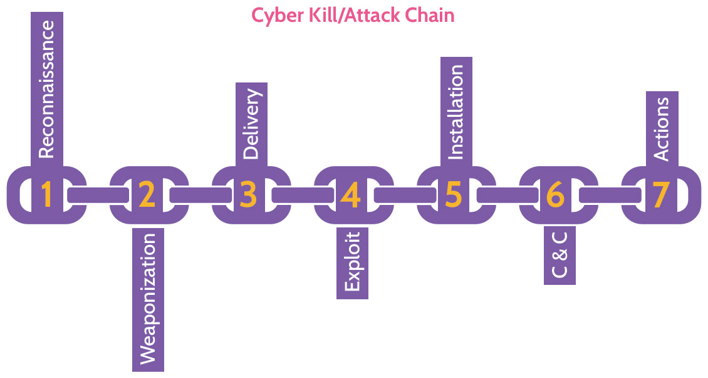
Figure 3-2: The Cyber Kill Chain
Secure Access Service Edge
We discuss secure access service edge when we talk about edge computing in section 3.5.15.
3.2 Understand the fundamental concepts of security models (e.g., Biba, Star Model, Bell-LaPadula)
3.2.1 Security Models
CORE CONCEPTS |
|
|
What Is a Model?
A security model is a representation of what security should look like in an architecture being built. Security models have existed and have been used for years. Some of these models include Bell-LaPadula, Biba, Clark-Wilson and Brewer-Nash (also referred to as the Chinese Wall model). These are simple models that provide the basis-the fundamental means-for building confidentiality or integrity into architectures that require these core principles. Like any model, security models represent what security needs to look like. Many people don't value the importance of security models because many of them date back to the early '70s, like Bell-LaPadula; but these still apply today. The conceptual, fundamental ways to address confidentiality that Bell-LaPadula highlights are the same today as they were in the '70s. The way that confidentiality is addressed today is also the same as it was years ago. Technology changes, but the fundamental rules on how confidentiality is addressed remain the same. It's valuable to understand these models and their underlying rules, as they govern the implementation of the model.
Concept of Security
Here's the bottom line: To ensure the protection of any architecture, it must be broken down into individual components, and adequate security for each component needs to be put in place. Remember that a chain is only as strong as its weakest link. However, note that any system should be broken down and individual components secured to the degree that value dictates doing so.
3.2.2 Enterprise Security Architecture
CORE CONCEPTS |
|
|
To implement an enterprise security architecture, frameworks exist to serve as guidelines. Three of the most popular enterprise security architectures are Zachman, Sherwood Applied Business Security Architecture (SABSA), and The Open Group Architecture Framework (TOGAF). Though each differs a bit in structure and terminology, they each basically do the same thing to protect any architecture. Zachman focuses on answering basic questions like how, where, who, when, and why by directing those to the various company teams (e.g., designers, owners, architects, strategists, engineers, operators) and acquiring their feedback. However, this is an older model dating back to the '70s and may not necessarily be the most suitable model today, as it merely focuses on classification and organization of enterprise security. SABSA is a newer framework (adopted in 1995) that focuses on security architecture risk and allows security to be embedded in IT functions. It is an open source framework that provides scalability and ease of implementation, facilitates compliance, and can help response prioritization. TOGAF focuses on efficient resource utilization and cost minimization while having a modular structure increasing its adoption, a content framework providing consistency, and a style that allows architectural flexibility.
Security Models
Security models are pretty simple. Essentially, they're the rules that need to be implemented to achieve security. Many security models exist, but most of them are one of two types: lattice-based or rule-based. A good way to envision a lattice-based model is to think of a ladder, where a framework and steps exist that look a bit like layers, going up and down. In other words, a lattice-based model is a layer-based model. It requires layers of security to address the requirements. Two lattice-based models exist: Bell-LaPadula and Biba. Bell-LaPadula addresses one primary component of the CIA triad: confidentiality. Biba addresses another component: integrity. All other models are rule-based, meaning specific rules dictate how security operates. People sometimes argue that lattice-based models also provide rules and ask why they're not considered rule-based. Lattice-based models do include rules, but those rules are confined to layers within the model; hence, the term lattice-based is more applicable. Table 3-3 provides a summary of the various lattice-based and rule-based security models.
|
Layer / Lattice-based Models |
Rule-based Models |
|
|
|
Table 3-3: Lattice-Based and Rule-Based Security Models
3.2.3 Layer-based Models
CORE CONCEPTS |
|
|
|
|
As we mentioned earlier, lattice-based security models, like Bell-LaPadula and Biba, can also be thought of as layer-based security models. Based upon intersecting vertical and horizontal support elements, a lattice structure can be envisioned as having different layers. Extrapolating this concept further, each of the two security models can be viewed as having different layers of security.
Bell-LaPadula
Bell-LaPadula is based on incorporating the necessary rules that need to be implemented to achieve confidentiality. Based upon this query, a lattice-based model was developed as also seen in Figure 3-3.
Bell-LaPadula addresses only confi dentiality
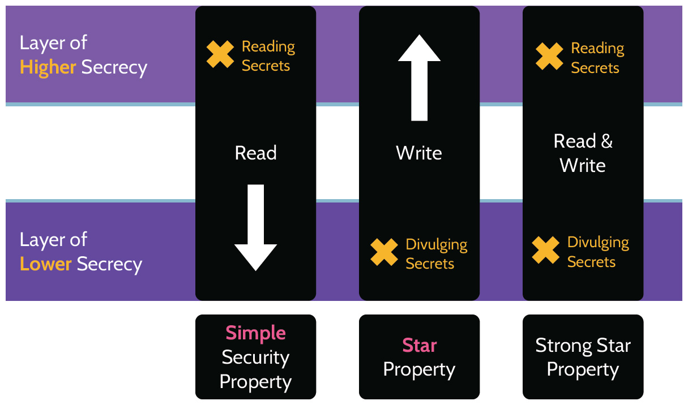
Figure 3-3: Bell-LaPadula Model
This model is based on three basic principles:
1. Simple security property, also known as "no read up" property, relates to reading and denotes that any subject at a particular security level may not read an object at a higher security level.
2. The star (*) property, also known as "no write down" property, relates to writing and denotes that any subject at a particular security level may not write to an object at a lower security level.
3. The strong star property relates to both reading and writing. Having an ability to both read and write means a subject should be able to read and write at their own layer, nothing higher and nothing lower.
Biba
Biba focuses on ensuring data integrity as shown in Figure 3-4. Integrity means accurate, relevant, or meaningful.
Biba addresses only integrity
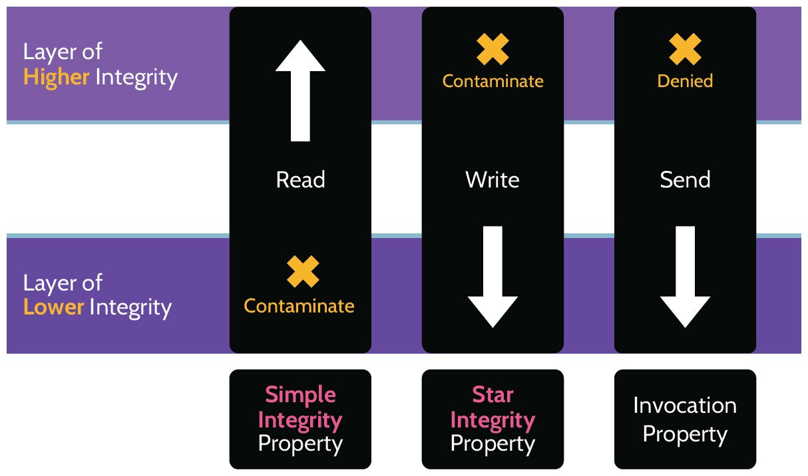
Figure 3-4: Biba Model
This model is also based on three basic principles:
1. Simple integrity property, also known as the "no read down" property, relates to reading and denotes that a subject at a particular level of integrity may not read an object at a lower integrity level.
2. Star (*) integrity property, also known as "no write up," relates to writing and denotes that a subject at a particular level of integrity may not write to an object at a higher integrity level.
3. Invocation property states that a subject can't send information to someone that is rated at a higher layer of information than the current one the subject holds.
Figure 3-5 provides a summary of the abovementioned models, with an emphasis on their two main principles.
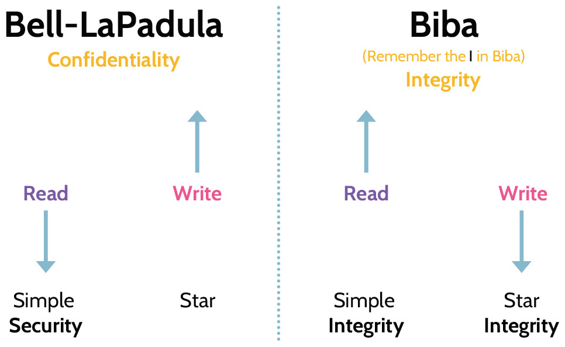
Figure 3-5: Summary of Bell-LaPadula and Biba
Lipner Implementation
Now a question may come to mind: What happens if you want to have both confidentiality and integrity? The Lipner implementation, shown in Figure 3-6, is the answer to how you can get the best out of both worlds.
It's simply an attempt to combine the best features of Bell-LaPadula and Biba regarding confidentiality and integrity. As such, Lipner is not truly a model but rather an implementation of two models. In theory, Lipner creates great security by combining two lattice-based models but based upon the way Bell-LaPadula and Biba work. Its principle is to separate objects into data and programs and apply sensitivity levels and job categories to subjects.
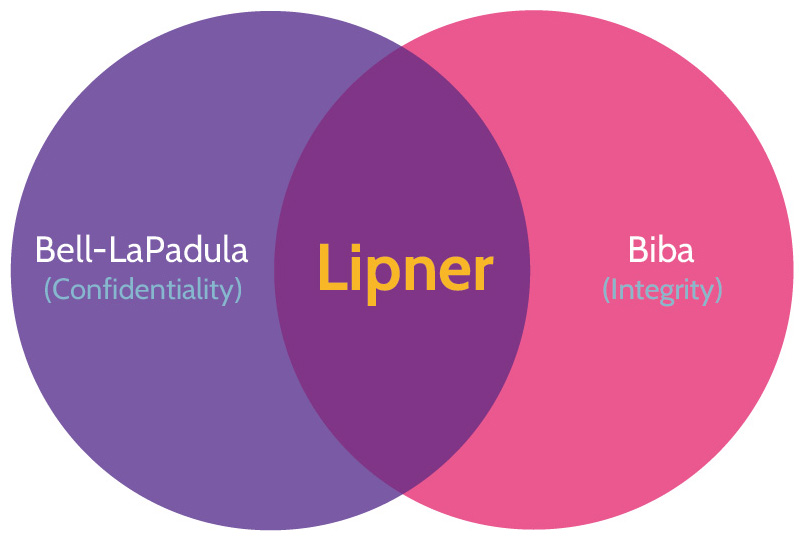
Figure 3-6: Lipner Implementation
3.2.4 Rule-based Models
CORE CONCEPTS |
|
|
|
|
At the core of any rule-based model is a set of rules that mediate access between subject and objects. Depending on the model, the number and complexity of rules employed may vary widely, and the focus of the model can also vary. In addition to looking at some specific rule-based models further below, a basic understanding of information flow models and covert channels should first be covered.
Information Flow
Information flow models track the flow of information. If the flow of information can be tracked, this implies it can be tracked throughout its life cycle; in other words, it can be tracked from the point of origin, whether collected or created, to its storage, use, dissemination, sharing with others, and eventually to its end of life (e.g., archival and destruction). Information flow can also help the identification of vulnerabilities and insecurities, like covert channels. Referring to lattice-based models, the information flow model serves as the basis for both Bell-LaPadula and Biba.
Covert Channels
Covert channels are unintentional communication paths that may lead to the disclosure of confidential information. The key word is unintentional-they're not meant to be there. However, because they're there, the potential for confidential information to be disclosed exists.
A wonderful example of a covert channel occurred in the early '90s and centered around the military operation known as Desert Storm. Some type of military action in the Gulf was supposedly imminent, but Pentagon officials kept exact details and timing under wraps. However, borrowing from something-the "pizza index"-that some people might think of as myth and others fact, journalists and other interested parties kept track of the number of pizzas being delivered to the Pentagon each day. Typically, a small number of pizzas (e.g., three to four) was delivered but just prior to the start of the conflict, a much larger number (like thirty to forty pizzas) was delivered. Based upon the significant change in the number of pizzas being delivered, it was safe to assume or infer that a much larger number of people were working late at the Pentagon. Why? Because, among other things, they were likely helping with the final planning stages of military action. CNN and other news outlets were able to piece together the inadvertent disclosure of sensitive information and predict when military strikes in the Middle East would commence. This is a perfect example of a covert channel-unintentional and inadvertent disclosure of sensitive and confidential information.
Covert channels are unintentional & may involve storage or timing; when they exist, confidentiality may be compromised
Covert channels, also sometimes called secret channels, are unintentional communications paths, and two types of covert channels exist, as summarized in Table 3-4. Storage refers to when storage capabilities can be exploited in such a way that confidential information is unintentionally disclosed or communicated. Timing refers to when the timing capabilities of a system can be exploited in a manner that allows confidential information to be signaled. Looking back at the pizza example, what type of covert channel does it represent? You guessed it-timing-because that's where the weakness is, in the timing mechanism. The number of pizzas ordered in a twenty-four-hour period signaled information that was considered confidential.
An example of a storage covert channel exists in most technology architectures. On a laptop, sensitive information could be placed in RAM, because a process needs to use it, but when that process finishes, the sensitive information remains present in memory. That could become available to other processes that are placed in memory and can read it. The sensitive information is not meant to be in RAM, but it is in fact there, and it could disclose confidential information. That is an example of a storage covert channel, which represents the majority of covert channels (roughly 99 percent).
|
Storage |
Timing |
|
Process writes sensitive data to RAM, and the data remains present after the process completes; now, other processes can potentially read the data. |
An online web server responds to a user providing an existing username within three seconds, while if the username doesn't exist it takes one second. That allows the attacker to perform username enumeration. |
Table 3-4: Covert Channel Types
Clark-Wilson
Clark-Wilson is an important, rules-based model that focuses only on integrity. Unlike, Biba, which only prevents unauthorized subjects from making any changes, Clark-Wilson offers further protection and meets three goals of integrity:
1. Prevent unauthorized subjects from making any changes (this is the only of the three that Biba addresses)
2. Prevent authorized subjects from making bad changes
3. Maintain consistency of the system
The goals and rules of integrity found in Clark-Wilson
Biba only addresses #1 and therefore falls short of truly addressing security concerns related to the protection of all integrity, while Clark-Wilson addresses #1 and then further protects integrity through #2 and #3.
Clark-Wilson achieves each of the goals specifically through application of the three rules of integrity noted in Table 3-5.
|
Well-Formed Transactions |
Separation of Duties |
Access Triple |
|
Good, consistent, validated data. Only perform operations in a manner that won't compromise the integrity of objects. |
One person shouldn't be allowed to perform all tasks related to a critical function. |
Subject | Program | Object A subject cannot directly access an object, i.e., in a database, access must go through a program that enforces access rules. |
Table 3-5: Clark-Wilson Rules
Brewer-Nash (The Chinese Wall) Model
Brewer-Nash is also known as "The Chinese Wall" and it is an information flow model that has one primary goal: Preventing conflicts of interest.
The model stipulates and ensures that information flows between subjects and objects are only allowed if the information does not provide a conflict of interest. An example of where Brewer-Nash might be implemented is between the Development and Production departments in an organization, as the two departments should not be able to influence each other or even allow access between each other. Another example is a big bank, between the Retail Investments and Mergers and Acquisitions (M & A) departments, as knowledge shared from the M&A department could significantly influence activities in the Investments department as also shown in Figure 3-7.
Like Bell-LaPadula, Brewer-Nash primarily addresses issues related to confidentiality.
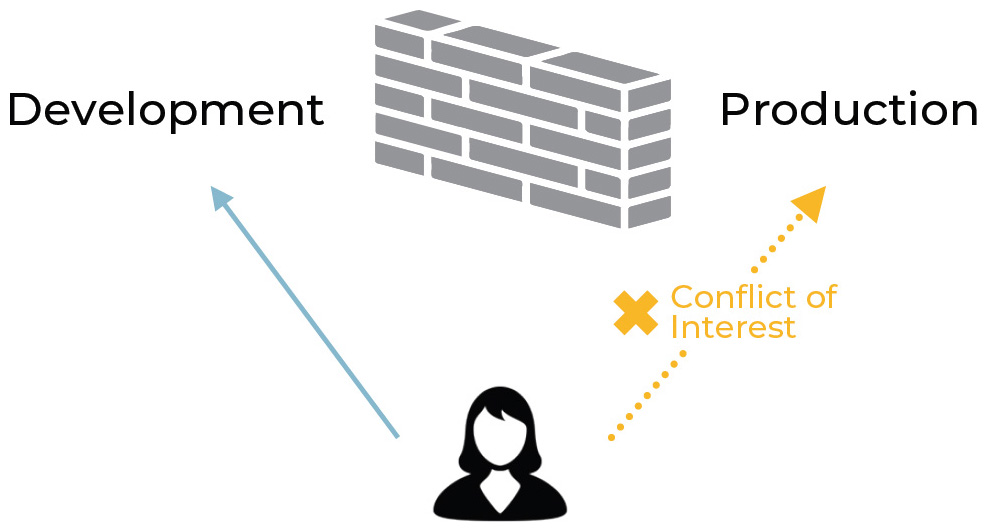
Figure 3-7: Conflict of Interest between Two Company Departments
Graham-Denning Model
Graham-Denning is another lesser known, rule-based model that specifies rules allowing a subject to access an object.
Harrison-Ruzzo-Ullman Model
Like Graham-Denning, Harrison-Ruzzo-Ullman is also a rule-based model that focuses on the integrity of access rights via a finite set of rules available to edit the access rights of a subject. It adds the ability to add generic rights to groups of individuals.
Remember that all security models are either classified as lattice-based or rule-based.
3.2.5 Certification and Accreditation
CORE CONCEPTS |
|
|
Evaluation Criteria
This next section deals with what are known as "evaluation criteria systems." The primary thing to remember is they're measurement systems. When architectures-especially security architectures-are built, products are often purchased from vendors. Security today often relies on solutions and mechanisms provided by vendors. This fact introduces a potential problem: How do we know vendor solutions actually provide the level of security we think they provide? Any vendor is going to say they have the best products, the best solutions, the best architectures. For example, if a firewall needs to be purchased, every firewall vendor is going to say their firewall is the best one available and that it will meet our needs perfectly. How can statements like this be confirmed and verified? We would need an independent and objective measurement system that vendors can use for evaluation purposes and companies for purchasing purposes. Such a system could be used by any organization around the globe to make purchasing decisions and not need to rely on vendors themselves. With such a system, similar products from different vendors can easily be compared. If the product requirements are understood-for example, for the firewall noted above-evaluations from multiple vendor firewalls could be compared and the best one chosen. These evaluations, these measurements, could be trusted, because they've been created using an independent, vendor-neutral, objective system. These measurement systems do, in fact, exist and are called "evaluation criteria systems." The most well-known evaluation criteria systems are called Trusted Computer System Evaluation Criteria (TCSEC)-also known as the Orange Book, the European equivalent of TCSEC called Information Technology Security Evaluation Criteria (ITSEC), and the latest one, an ISO standard, called the Common Criteria.
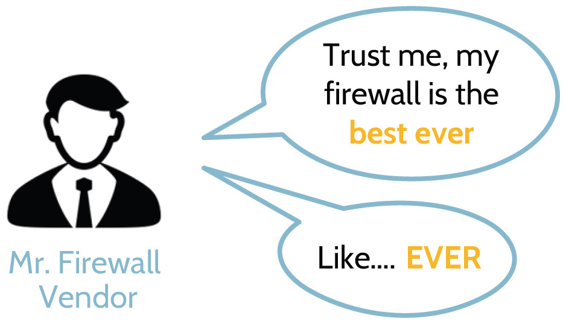
From the description above, it should be clear that vendors and consumers have an interest in using these measurement systems, and this explains why they've become very popular-especially the Common Criteria. Consumers want to shop for and buy products from vendors, and they want to know exactly what security levels the products provide and be able to trust those security capabilities. Likewise, vendors want their products measured and rated, so they'll be more likely to be purchased by customers. For example, if every available firewall is Evaluation Assurance Level 4 (EAL4 indicates a very methodical design, test and review process has been implemented) capable, a firewall that receives a rating of EAL3 is most likely not going to sell very well, as some redesign and other changes will likely need to take place. Evaluation and rating systems like this benefit vendors by giving them confidence that consumers will be interested in the products if the products are rated well. When an independent certified company examines a product using objective and commonly accepted criteria versus a biased entity like the vendor or a related party using subjective and biased criteria, everybody can trust the results. Potential customers can examine the resulting documentation and make informed purchasing decisions, while vendors can examine the results and know exactly how their product compares to the same category of products from other vendors. This is what each of the evaluation criteria systems do, and the Common Criteria, in its third and most recent version, is by far the best one available today.
Certification and Accreditation are two related, yet different and very important concepts in security. Their definitions are outlined in Table 3-6.
|
Certification |
Accreditation |
|
Comprehensive technical analysis of a solution or a product to ensure it meets the desired needs |
Official management signoff of certification for a set period of time |
Table 3-6: Certification and Accreditation
Understand the difference between certification andaccreditation and what each provides
Certification is the comprehensive technical analysis of a solution to make sure that it meets your needs. For example, for an organization that needs a firewall, how will the organization easily sift through the likely dozens of firewalls that exist and evaluate the one best suited to meet its needs? Before any decision or recommendation can be made, the requirements of the organization must be understood. Once the requirements are understood, a solution can more easily be identified. Among available firewalls, the one that best meets the requirements will be identified, and a comprehensive technical analysis of each potential solution is the basis for this identification. This is certification.
Accreditation is the official management decision to use a solution. Usually, this is done for a set period of time. One important note, accreditation is not performed by the security function; rather, it's performed by the asset owner or management. They will make the decision to accredit the solution for, let's say, the next eighteen months. Once this time period expires, the certification and accreditation process would be repeated. The same solution that's been in use might still be the best one, at which point management would re-accredit the solution for another set period of time; otherwise, a different solution would be selected.
This is the benefit of some of these evaluation criteria systems, especially of the Common Criteria. Once a vendor's product is evaluated, it becomes available to everybody. In addition, every capability and shortcoming of a given product will be freely viewable. Most vendors commonly publish the results of a Common Criteria assessment on the products section of their website. The collection of products that have been evaluated using the Common Criteria continues to grow, which is great; it requires a massive amount of work, but the output of information is extremely helpful to consumers.
3.2.6 Evaluation Criteria (ITSEC and TCSEC)
CORE CONCEPTS |
|
|
|
Orange Book/Trusted Computer System Evaluation Criteria (TCSEC)
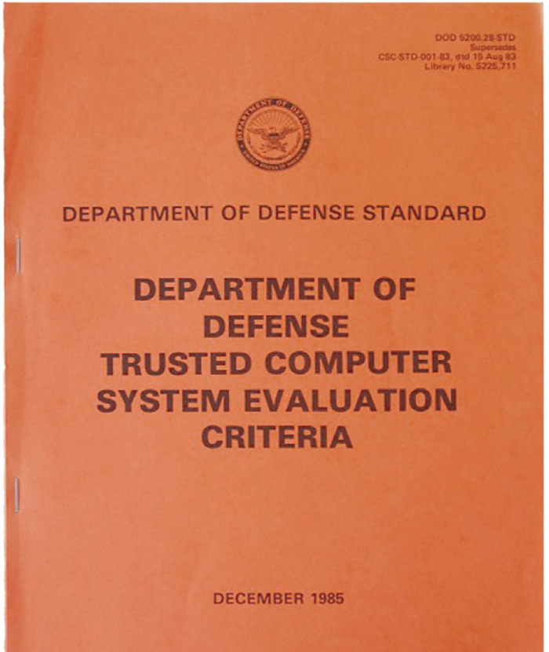
Figure 3-8: TCSEC Guide
The first evaluation criteria system created is often referred to as the "Orange Book," depicted in Figure 3-8, due to the fact the cover of the book is orange. It was written as part of a series of books known as the "rainbow series," published by the US Department of Defense in the '80s. Each book in the series deals with a topic related to security, and the cover of each is a different color, thus the nickname "rainbow series." There's one book called the Light Blue Book that deals with password guidelines, while the Red Book deals with network security, and the Orange Book focuses on measuring security products.
The classification levels-the criteria-used in the Orange Book are shown in Table 3-7.
|
Functional Levels |
|
|
A1 |
Verified Design |
|
B3 |
Security labels, verification of no covert channels, and must stay secure during start up |
|
B2 |
Security labels and verification of no covert channels |
|
B1 |
Security labels |
|
C2 |
Strict login procedures |
|
C1 |
Weak protection mechanisms |
|
D1 |
Failed or was not tested |
Table 3-7: Orange Book Evaluation Criteria
The Orange Book only measures confidentiality, which reflects the Department of Defense's mission in the early '80s, when confidentiality (especially in the context of the military) was so important. Even by today's standards and when many people say it's obsolete, if you're interested only in confidentiality, there's really no better system than TCSEC. Evaluation criteria goes from D1, which means no security, to A1, which means very robust and mathematically verified security as shown in Table 3-7. Despite the possibility of an A1 rating, most products are typically rated at C2 or B1. Each rating level implies that a given product "inherits" all the characteristics of the previous level.
The Orange Book, however, only measures confidentiality. In addition, it only measures single-box type of architectures; it does not map well to networked environments. This is why a lot of organizations in Europe considered the model from a more current perspective and revamped it. They took what they considered to be a good idea and made it better in what is known as the Information Technology Security Evaluation Criteria (ITSEC).
Information Technology Security Evaluation Criteria (ITSEC)
Unlike the Orange Book, ITSEC measures more than confidentiality, and it works well in a network environment. Also, when ITSEC was created, ways to measure function and assurance separate from each other were incorporated. When a product is considered through the lens of ITSEC, two ratings are given. One rating-the "F" levels-is a functional rating, like the ones used in the Orange Book. The other rating-the "E" levels-was introduced as part of ITSEC and refers to levels of assurance. E levels range from E0 to E6 (as also seen in Table 3-8), with E6 being the top and representing the best level. Obviously, E6 would be a system that provides robust assurance while E0 not so much.
|
Assurance Levels |
|
|
E6 |
Formal end-to-end security tests + source code reviews |
|
E5 |
Semi-formal system + unit tests and source code review |
|
E4 |
Semi-formal system + unit tests |
|
E3 |
Informal system + unit tests |
|
E2 |
Informal system tests |
|
E1 |
System in development |
|
E0 |
Inadequate assurance |
Table 3-8: ITSEC Assurance Levels (E levels)
Note that ITSEC improves on the Orange Book by providing:
Functional measurements (same as the Orange Book)
Assurance measurements (E levels)
ITSEC was replaced by Common Criteria in 2005.
3.2.7 Common Criteria
CORE CONCEPTS |
|
|
|
ISO 15408, better known as the Common Criteria, is the most used of the evaluation criteria systems and is also the most popular; most products are evaluated using it. As such, it's critical to understand Common Criteria components, Evaluation Assurance Levels (EAL), and the ramifications if changes to an EAL-rated system take place.
Like the other evaluation systems, the Common Criteria provides confidence in the industry for consumers and security functions as well as for vendors and others. The Common Criteria is the latest measurement system, and it's also an ISO standard (ISO 15408). It's called the Common Criteria because several countries joined together with a common goal: to create a common measurement system that could be trusted globally. For example, if a German-made product is rated, the rating can be trusted by US-based companies, because the rigorous rating process is independent and objective and globally applicable. To make this possible, globally dispersed, independent, Common Criteria-licensed organizations evaluate and rate products. A firewall vendor will regularly hire a Common Criteria-licensed company to evaluate and rate their firewall. The licensed organization would use a specific and rigorous process to measure and ultimately rate the firewall with an EAL level that objectively communicates what security it provides. The process also provides documentation that may prove useful to security professionals and other potential consumers of the firewall. Figure 3-9 depicts the Common Criteria components and process flow.
Common Criteria Process
The first component is the Protection Profile (PP). The PP lists the security capabilities that a type or category of security products should possess. For example, there's a Protection Profile for firewalls; it lists the security capabilities that any firewall should contain-for example, two-factor authentication (2FA) capabilities, VPN capabilities, ability to encrypt to 128-bit encryption level, and secure logging, to name a few. Protection profiles exist for different categories of security products and serve to add uniformity to each category; there's one for firewalls, one for access controls, one for IDS systems, etc. This approach provides a consistent framework of capabilities that a specific category of product should possess.
What the Common Criteria Protection Profile (PP) components represent
Target of Evaluation (TOE) is the next component. Using the earlier firewall example, if a vendor desires for their firewall to be rated according to the Common Criteria, the firewall would be considered the TOE. The TOE-the Target of Evaluation-is simply a vendor's product that's being rated and being assessed according to the Common Criteria.
The next component, the Security Targets (ST), describe-from the vendor's perspective-each of the firewall's security capabilities that match up with capabilities outlined in the Protection Profile. When the firewall is measured, capabilities like VPN, encryption, two-factor authentication, secure logging, and so on are going to be compared against standards listed in the protection profile and tested extensively. For example, the firewall may perform two-factor authentication very well, but it lacks strong VPN capabilities. Security targets are going to be scrutinized, and each will be scrutinized under the dual lens of functional and assurance security capabilities, the two prementioned pillars of a well-implemented security control.
The Security Targets is really where the value of the Common Criteria lies. As each capability is tested extensively, there is much documentation that is produced that highlights the security capabilities and deficiencies of each security target being tested. This is what provides potential consumers the information that is needed for them to evaluate vendor products.
The evaluation process is the part of the Common Criteria that creates meaningful documentation that becomes available to any interested parties. At the end, after the capabilities of the firewall have been evaluated, an overall EAL level will be assigned to the firewall. An EAL can range anywhere from 1-7, with 7 being the most thorough and exhaustive. The above process steps are summarized in Table 3-9, while the different EAL levels are listed in Table 3-10.
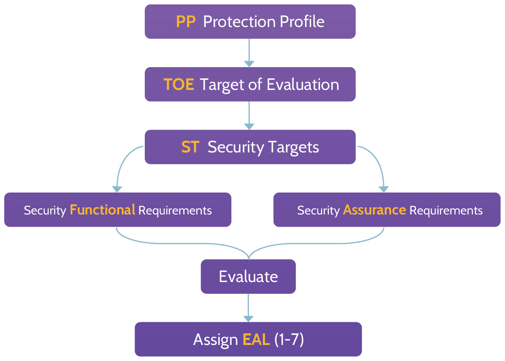
Figure 3-9: Common Criteria Process
|
PP |
Specification of functional and assurance requirements for a specific type of security product |
|
TOE |
The specific product/system to be evaluated |
|
ST |
Written statement by vendor explaining how functional and assurance specifications of the product meet the protection profile (PP) requirements |
|
Security Functional Requirements |
Security targets are evaluated from a functional perspective: what features exist and how well they work relative to the desired and expected security behavior. |
|
Security Assurance Requirements |
Security targets are evaluated from an assurance perspective: that the vendor's claimed security functionality and the CC evaluation process align. |
|
Evaluate |
Consider all of the components together |
|
Assign EAL (1-7) |
See the seven Common Criteria EAL levels below |
Table 3-9: Common Criteria Steps
|
EAL7 |
Formally verified, designed, and tested |
|
EAL6 |
Semi-formally verified, designed, and tested |
|
EAL5 |
Semi-formally designed and tested |
|
EAL4 |
Methodically designed, tested, and reviewed |
|
EAL3 |
Methodically tested and checked |
|
EAL2 |
Structurally tested |
|
EAL1 |
Functionally tested |
Table 3-10: EAL Levels
EAL level definitions and order
Despite the table above illustrating multiple EAL levels, EAL7 is not necessarily the best for the sake of a vendor marketing and selling its product. In fact, most organizations will not purchase a product that is rated above EAL4. Operating systems are typically at EAL3 and firewalls at EAL4.
The potential negative implications if a product is rated too high
If a product is at EAL7, it could become more vulnerable to compromise, due to being more complex and harder to maintain. Yes, the product might offer more security features and capabilities, but if they require extensive configuration, administrative skills, and maintenance, consumers will likely not use the features. This could ultimately leave an organization at greater risk. Vendors, therefore, must balance the trade-off between functionality and security. Too much of the latter always impacts product speed and administrative overhead, and it might lead to the creation of a very expensive product too. This explains why vendors often produce products that are configurable. Just because a firewall is EAL 4 capable, it doesn't mean it must be operated at EAL4; a customer could very well decide to configure and use it at an EAL3 level.
If a product is patched or receives software/firmware updates, the EAL level remains the same
A final thing to note is that, after a product undergoes an evaluation and is assigned an EAL level, the EAL level for that product will remain the same throughout its life span, unless a major change in product functionality is introduced (in this case, the vendor may choose to have the product re-evaluated according to the Common Criteria). In other words, when a patch or software update to the product is made, the EAL level remains unchanged, unless the vendor decides to have it be re-evaluated. Evaluation through the Common Criteria is a voluntary process that costs money but ultimately provides the vendor with trust and confidence in their products, and provides consumers with objective and independent trust mechanisms.
3.3 Select controls based upon systems security requirements
3.3.1 Security Control Frameworks
CORE CONCEPTS |
|
|
|
What Do Security Control Frameworks Provide?
This section focuses on the selection of controls to include in a system. Recall that this domain's focus is building systems and protection mechanisms to secure those systems, which requires breaking the systems down into components and protecting each component. Components should be protected based upon value, which drives the selection of controls. All this activity is predicated on risk management.
As controls are considered, especially mitigating controls, control frameworks can be utilized to aid with the control selection process. Control frameworks provide comprehensive guidance, based upon best practices. For example, a security professional might be pondering how to protect a certain system component, like a storage device, CPU, or piece of memory, and turning to a control framework could offer insight into appropriate controls to consider. Additionally, as control frameworks provide guidance, the best and most applicable elements of multiple frameworks could potentially be utilized as part of the control selection process.
Understand the major frameworks at a high level, especially ISO 27001/02, which is an internationally recognized framework
From this perspective, the following section is a reminder of some of the major control frameworks available and how they can be applied. In addition to technical frameworks, many of the ones listed in Table 3-11 focus on overall business processes.
|
COBIT |
The Control Objectives for Information Technologies (COBIT) framework is particularly useful for IT assurance, such as conducting audits and gap assessments. It was created by Information Systems Audit and Control Assurance (ISACA), for information technology management and IT governance, and therefore it is particularly useful for IT assurance activities. |
|
ITIL |
Information Technology Infrastructure Library (ITIL) defines the processes in a well-run IT department, from the onboarding process to procurement, change management, configuration management, and access control, to name a few. ITIL defines the processes for IT service management that focuses on aligning IT services with business goals and objectives. |
|
NIST SP 800-53 |
National Institute of Standards and Technology Special Publication (NIST SP) 800-53 is a set of best practices, standards, and recommendations that help an organization improve its cybersecurity controls. |
|
PCI DSS |
The Payment Card Industry Data Security Standard (PCI DSS) is a standard for organizations that handle credit cards like VISA, MasterCard, and American Express. The PCI Standard was created by the card brands, and it is administered by the Payment Card Industry Security Standards Council. The standard was created to increase controls around cardholder data to reduce credit card fraud. The volume of transactions processed by a merchant helps determine the method used to validate compliance. |
|
ISO 27001 |
International Organization for Standardization/International Electrotechnical Commission (ISO/IEC) 27001:2022 specifies the requirements for establishing, implementing, maintaining, and continually improving an information security management system within the context of the organization. It also includes requirements for the assessment and treatment of information security risks tailored to the needs of the organization. The requirements set out in ISO/IEC 27001:2022 are generic and are intended to be applicable to all organizations, regardless of type, size, or nature. Organizations can be certified against ISO 27001. Annex A of the standard contains the following domains: 1. Information security policies 2. Organization of information security 3. Human resource security 4. Asset management 5. Access control 6. Cryptography 7. Physical and environmental security 8. Operations security 9. Communications security 10. System acquisition, development, and maintenance 11. Supplier relationships 12. Information security incident management 13. Information security aspects of business continuity management 14. Compliance |
|
ISO 27002 |
ISO/IEC 27002:2022 provides guidelines for organizational information security standards and information security management practices including the selection, implementation, and management of controls, taking into consideration the organization's information security risk environment(s). Essentially ISO 27002 provides guidance for implementing the controls in ISO 27001. |
|
COSO |
Committee of Sponsoring Organizations of the Treadway Commission (COSO) is a voluntary private sector initiative dedicated to improving organizational performance and governance through effective internal control, enterprise risk management, and fraud deterrence. |
|
HIPAA |
Health Insurance Portability and Accountability Act (HIPAA) relates to security controls in the health-care industry, and it focuses on the protection of protected health information (PHI) of individuals. |
|
FISMA |
Federal Information Security Management (FISMA) Act of 2002 requires US federal agencies to develop, document, and implement agency-wide security programs to provide information security for the operations and assets of the agency. FISMA further requires security programs for any other agencies, contractors, or service providers. |
|
FedRAMP |
Federal Risk and Authorization Management Program (FedRAMP) provides a standardized approach to security assessment, authorization, and continuous monitoring for cloud products and services. Any cloud services that hold US federal government data must be FedRAMP authorized. |
|
SOX |
Sarbanes-Oxley (SOX) Act is a direct result of the wild financial fraud at "Enron". The US Congress decided better controls were needed to be in place to prevent similar incidents from happening again, and specifically enacted SOX to prevent financial fraud by public companies and thereby protect the financial interests of shareholders. |
Table 3-11: Security Control Frameworks
Rationalizing Frameworks
Figure 3-10 illustrates how all these different security frameworks relate to one another.
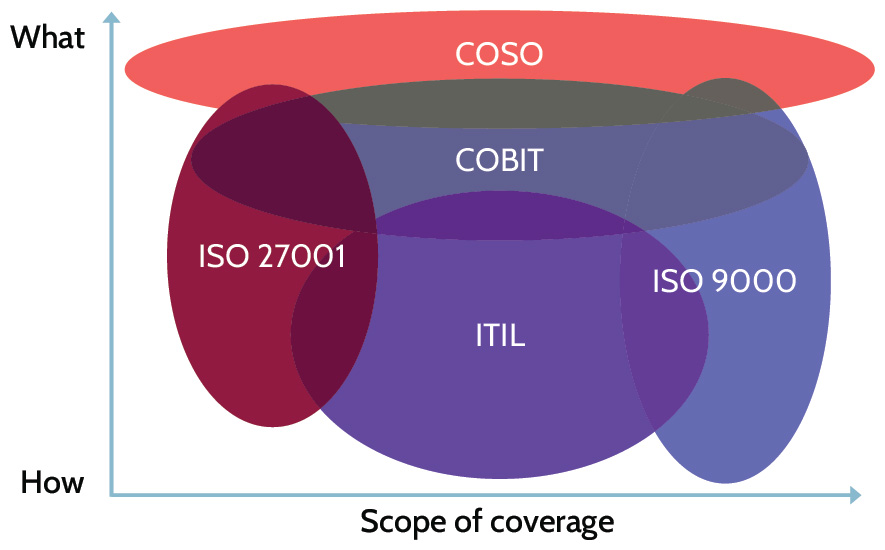
Figure 3-10: Framework Relations
Notice that they overlap, which means that frameworks can span contexts, and as also noted earlier, organizations will often choose to use features from multiple frameworks to meet their needs. Consider the example of a hospital, where patients are treated and payments are made. In this context, HIPAA and PCI DSS frameworks should undoubtedly be present, among other frameworks. Most organizations choose to use different ones for various contractual or legal reasons. Then they combine these and attempt to develop one overarching and simplified framework. It doesn't make sense to test a very similar control multiple times. As such, controls are merged, rationalized, and then tested once. This is the approach most organizations take.
3.4 Understand security capabilities of information systems (e.g., memory protection, Trusted Platform Module (TPM), encryption/decryption)
3.4.1 RMC, Security Kernel, and TCB
CORE CONCEPTS |
|
|
|
|
|
Subjects and Objects
Before diving into concepts like the RMC and security kernel, it's important to understand subjects and objects, as defined in Table 3-12, as those concepts are heavily used throughout the following section.
|
Subject |
Object |
|
Active entities A subject is a person, process, program, or anything similar that actively tries to access an object. |
Passive entities An object is anything that is being passively accessed by a subject, like a file, server, process, or hardware component. |
Table 3-12: Subjects and Objects
Reference Monitor Concept (RMC)
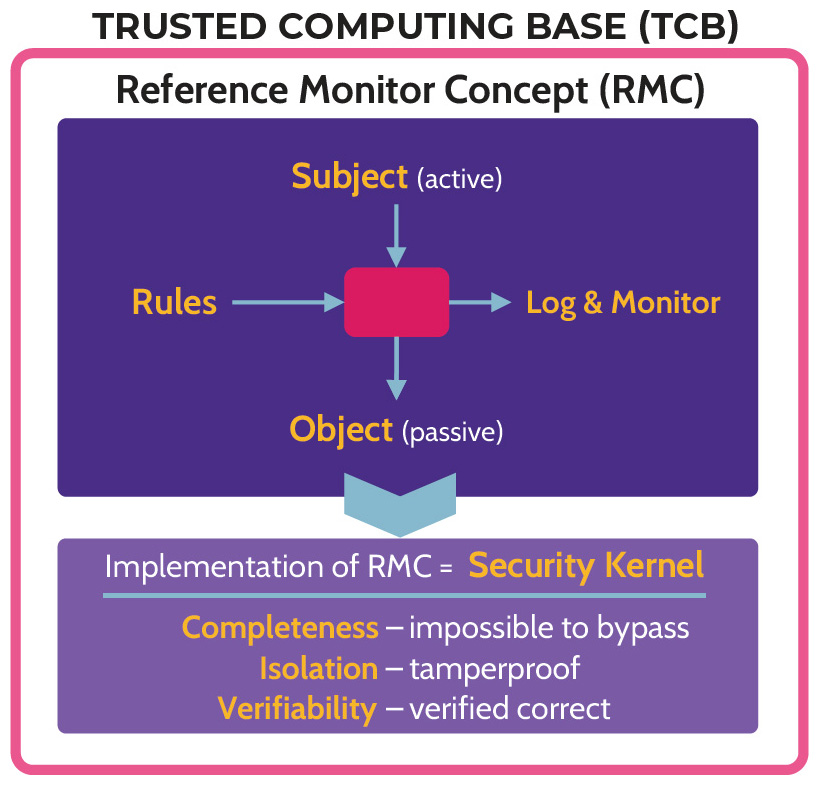
Figure 3-11: Reference Monitor Concept
The RMC is simply the concept of a subject accessing an object through some form of mediation that is based on a set of rules, with this access being logged and monitored. This is the "reference monitor concept," depicted in Figure 3-11, which is prevalent throughout security and is a topic often seen on the exam. When a key is put into a door lock, the reference monitor concept is present; when logging on a computer system, the reference monitor concept is there-as a subject is accessing an object-based on a set of rules, and this activity is logged and monitored. This concept is constantly employed in security. There are a few key points to keep in mind about the reference monitor concept. RMC features include:
Must mediate all access
Be protected from modification
Be verifiable as correct
Always be invoked
It's equally important to remember that the reference monitor concept is just a concept. Unless the RMC is implemented, it's simply some good ideas. The implementation of the reference monitor concept is known as a security kernel.
Security Kernel
Here's an important distinction: the security kernel controls access to any asset; the reference monitor concept defines a theory, a concept. The security kernel is the implementation of the reference monitor concept. It's important to understand this distinction. Any system that is actually controlling access must be an actual implementation. If it's implemented, it's a security kernel.
When implemented, a viable security kernel should contain three properties.
The first property is known as completeness. Completeness means it is impossible to bypass the mediation. If a subject is somehow able to bypass the mediation, there would be no point in having a security kernel. Completeness means it is impossible to bypass the security kernel; the subject must always go through the security kernel when accessing the object.
The next property is known as isolation. Isolation relates to the mediation rules and specifically ensures that the mediation rules are tamper-proof. Only authorized individuals should be able to change these rules.
The final property, verifiability, relates to the aspect of assurance. It means being able to verify that the security kernel is functioning correctly. How do we do that? This is done through logging and monitoring, including other forms of testing.
Any time a security kernel is implemented, it should demonstrate the three characteristics or properties of the RMC: completeness, isolation, and verifiability, which are also summarized in Table 3-13.
|
Completeness |
Isolation |
Verifiability |
|
Impossible to bypass mediation; impossible to bypass the security kernel |
Mediation rules are tamperproof |
Logging and monitoring and other forms of testing to ensure the security kernel is functioning correctly |
Table 3-13: RMC Characteristics
Trusted Computing Base (TCB)
Another term that encompasses all the security controls that are implemented to protect an architecture is the trusted computing base (TCB). This is the term used to refer to all the protection mechanisms within a system, within an architecture; the TCB is the totality of protection mechanisms within an architecture. Examples of components that would be within the TCB include all the hardware, firmware, and software processes that make up the security system. For a large organization, things like policies and procedures, onboarding processes, change management, the entire network, security training and awareness programs, and similar things would be part of the TCB. Clearly, the TCB can be huge, and if an entire enterprise is being considered it can be massive.
It's worth highlighting that all components noted below are found in the TCB:
Processors (CPUs)
Memory
Primary storage
Secondary storage
Virtual memory
Firmware
Operating systems
System kernel
3.4.2 Processors (CPUs)
CORE CONCEPTS |
|
|
|
A CPU is the component within a computer that processes all the instructions. Essentially, a CPU is the brain of a computer. As shown in Figure 3-12, a CPU constantly iterates through this four-step process:
Fetching instructions and data Decoding instructions Executing instructions Storing results
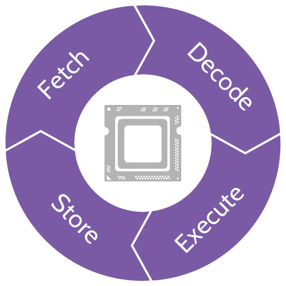
Figure 3-12: Four-Step CPU Processing
At their essence, CPUs solve problems.
Processor States
From a security perspective, CPUs operate in one of two processor states: the supervisor or problem state. These states can also be thought of as privilege levels and are simply operating modes for the processor that restrict the operations that can be performed by certain processes. A summary of their characteristics is provided in Table 3-14.
|
Supervisor State |
Problem State |
|
|
|
Table 3-14: Processor States
3.4.3 Process Isolation
CORE CONCEPTS |
|
|
If two applications are running on a computer, should one application be able to access the memory of the other application and manipulate it? Not really, unless the applications are specifically designed to allow interaction. If this was allowed, data could be corrupted, and inappropriate access could take place. A worst-case scenario could be one of the running processes accessing the operating system, which is another process. Processes need to be separated.
From a security perspective, process isolation is a critical element of computing, as it prevents objects from interacting with each other and their resources.
In other words, the actions of one object should not affect the state of other objects.
Process isolation is often accomplished using either of the two following methods:
Memory segmentation
Time-division multiplexing
Time-division multiplexing relates more to the CPU. With time-division multiplexing, process isolation is determined by the CPU. As before, when multiple applications are running, multiple accompanying processes are also running. In this case, the CPU allocates very small slots of time to each process. In reality, due to the extremely fast nature of even a slow CPU, being able to run multiple applications at the same time appears seamless. Under the hood, though, each application's process is running in isolation, based upon the CPU's processing time allocation.
Memory segmentation is all about separating memory segments from each other to protect the contents, including processes that may be running in those segments. In many cases it relates more to Random-Access Memory (RAM)-the high-speed volatile storage area found in computer systems. When applications are launched, a "loading" or "starting application" message sometimes accompanies that process. What's actually taking place is program code is being moved from the hard drive into RAM, because hard drives tend to be much slower than RAM. With code in RAM, when the CPU makes a request, subsequent processing can happen faster. However, if code from several different applications is loaded into RAM at the same time, one application shouldn't be able to access code from another application. Memory segmentation ensures that the memory assigned to one application is only accessible by that application. Based upon application needs, segments of memory are isolated and assigned to each application, and no other application should be able to access that particular segment, as depicted in Figure 3-13.
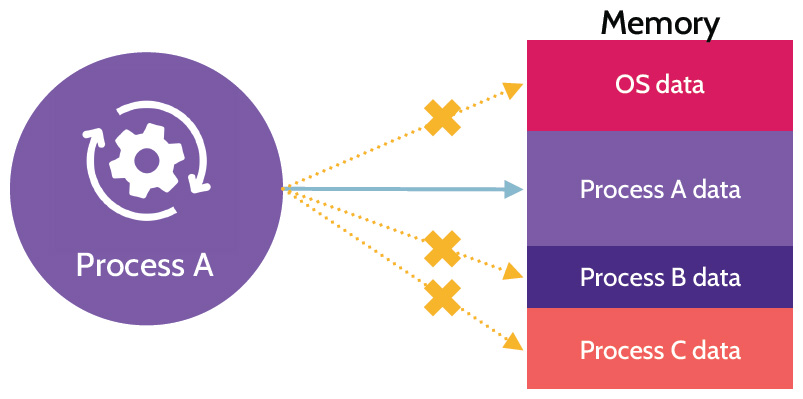
Figure 3-13: Memory Use
The process isolation methods are summarized in Table 3-15.
|
Memory Segmentation |
Time-Division Multiplexing |
|
Utilizes RAM and ensures that memory assigned to an application is not accessible by another application |
CPU divides time into slices and allocates slots of time to different processes |
Table 3-15: Process Isolation Methods
3.4.4 Types of Storage
CORE CONCEPTS |
|
|
|
The topic of storage, briefly mentioned earlier, requires a bit more elaboration. Storage is where data in a computer system can be found. At a high level, two main types of storage exist: primary and secondary storage. Table 3-16 shows the characteristics of each type.
|
Primary Storage |
Secondary Storage |
|
|
|
Table 3-16: Primary (Volatile) and Secondary (Non-volatile) Storage
Primary storage is also sometimes referred to as volatile memory. With volatile memory, anything stored there is temporary. In other words, if the power goes out, for example, anything stored in volatile memory goes away. With non-volatile memory, if the power goes out, data remains. Examples of volatile (or primary storage) include RAM and cache, to name a couple. If the power to a system gets cut, any data stored in volatile memory goes away. That's a big disadvantage. However, the major advantage is speed; primary memory is extremely fast. Examples of secondary storage (non-volatile memory) include hard drives, tapes, discs (CD/DVD), and similar items.
Another related concept refers to what happens because of RAM filling up when many applications are running at the same time. Data related to each program and running process are loaded into RAM, and if RAM fills up, the system will eventually crash. A way to mitigate this is using what's known as paging, or virtual memory, as depicted in Figure 3-14. Even though multiple programs or processes might be running, the operating system keeps track of what is being accessed in RAM and how often. When data stored in RAM is not being used frequently, the operating system proactively moves it out of RAM and onto a portion of the hard drive dedicated for this purpose. This portion of the hard drive is often referred to as the "paging file" or virtual memory. When data stored in the paging file is needed, the operating system pulls it back into RAM. This process can lead to latency and slow performance, but it keeps a system from crashing; it's less of an issue today because RAM is inexpensive.
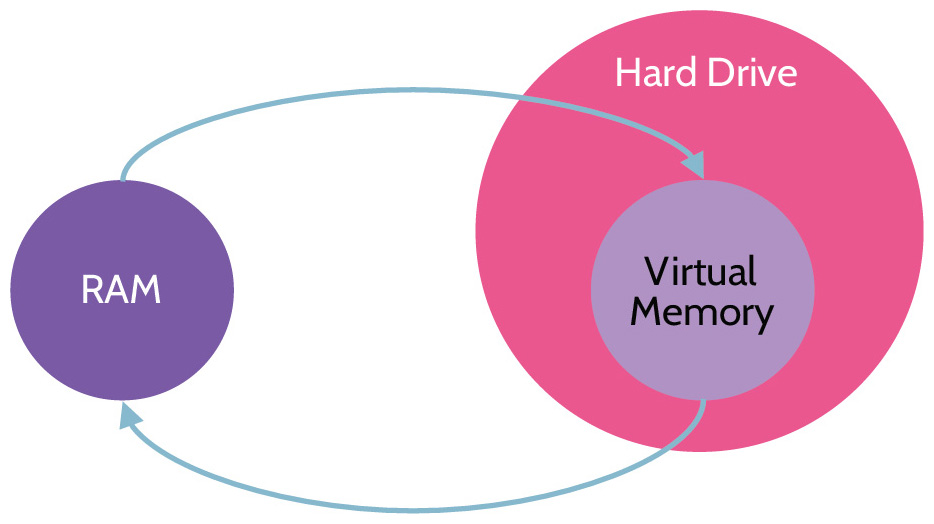
Figure 3-14: Virtual Memory
Figure 3-15 depicts the major differences between primary (volatile) and secondary (non-volatile) storage.
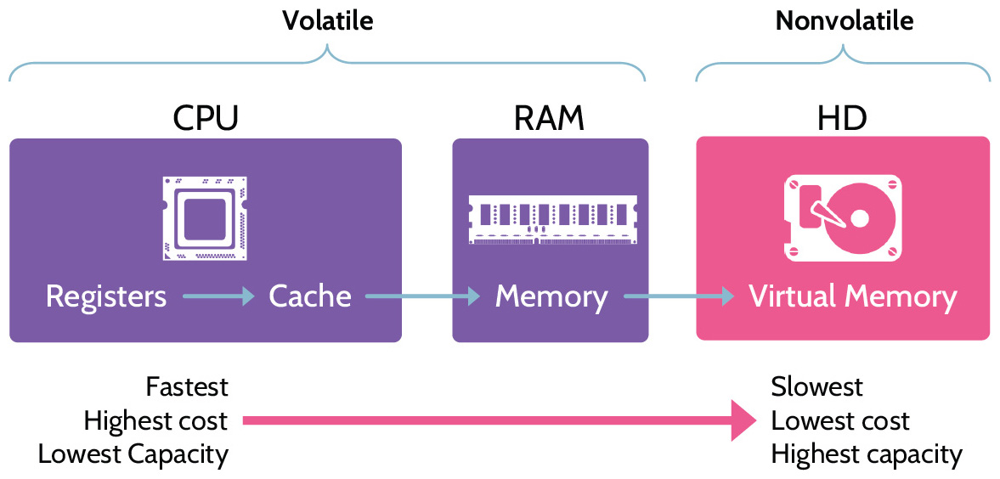
Figure 3-15: Volatile and Nonvolatile Storage
3.4.5 System Kernel
CORE CONCEPTS |
|
|
|
The system kernel is the core of the operating system and has complete control over everything in the system. It has low-level control over all the fine details and operational components of the operating system. In essence, it has access to everything.
One important thing to note is that the system kernel and the security kernel are not the same thing. As noted, the system kernel drives the operating system. The security kernel is the implementation of the reference monitor concept.
From a security perspective, it's critical to protect the system kernel and ensure that it is operating correctly, and privilege levels aid in this regard.
3.4.6 Privilege Levels
CORE CONCEPTS |
|
|
|
|
Figure 3-16 depicts the relation between user and kernel modes.
Subjects of higher trust (e.g., the system kernel) can access more system capabilities and operate in kernel mode. Subjects with lower trust (e.g., most applications running on a computer) can only access a smaller portion of system capabilities and operate in user mode.
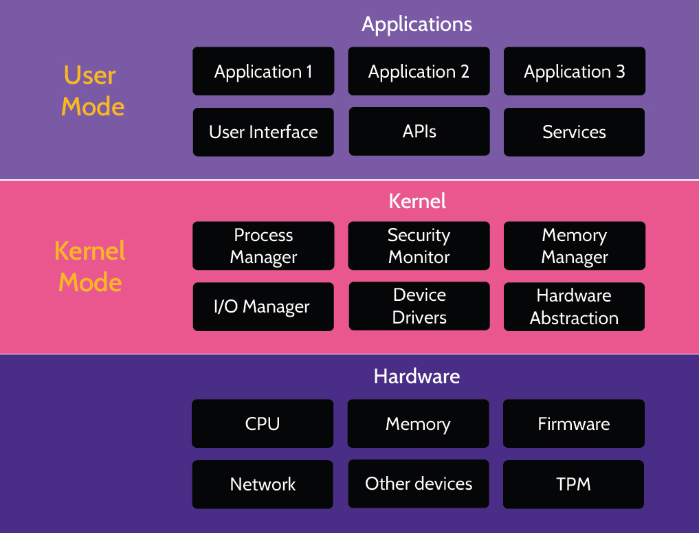
Figure 3-16: User and Kernel Modes
Which ring is most critical from a security point of view and would likely support things like firmware and other critical systemrelated processes
Ring Protection Model
The ring protection model, depicted in Figure 3-17, is a form of conceptual layering that segregates and protects operational domains from each other. Ring 0 is the most trusted and therefore the most secure ring. Firmware and other critical system-related processes run in Ring 0. Ring 3 (user programs and applications) on the other hand, is the least trusted and secure level, where the least access exists to protect the kernel from unwanted side effects like malware infecting the machine. The idea behind the model is that each ring communicates with the adjacent ring via system calls, and the outer rings can only communicate with the inner rings via the most trusted system calls.
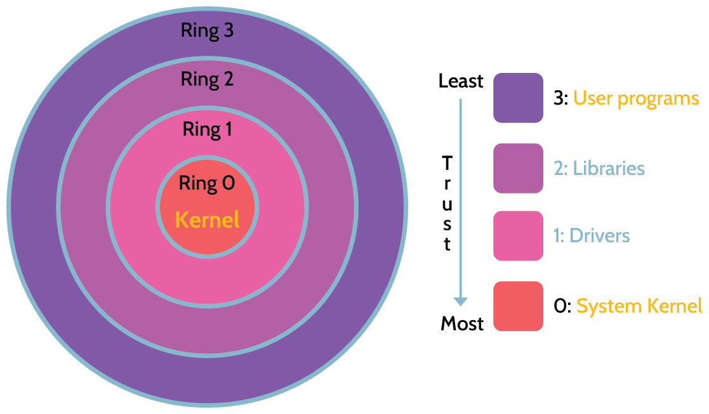
Figure 3-17: Protection Rings
Firmware
Firmware is software that provides low-level control of hardware systems; it's the code that boots up hardware and brings it online. One of the challenges with firmware is that it is no longer hard-coded; therefore, it can be updated and modified, which makes it vulnerable to attacks. Changeable, updateable, or modifiable, firmware means that hardware itself is now vulnerable to attacks.
3.4.7 Middleware
CORE CONCEPTS |
|
|
The idea of middleware is it's an intermediary; it's a layer of software that enables interoperability (glue) between otherwise incompatible applications. Think of mobile banking as an example. With mobile banking, a mobile device application exists that allows bank balances to be checked, funds transferred, and so on. However, what types of systems do most bank software run on? Most big banks, especially older ones, run on mainframe systems designed decades ago. When those systems were first designed, there wasn't any concept of mobile and web-based banking. A mainframe system doesn't fundamentally understand APIs or things like web-based banking. If an older bank wants to develop a mobile application that can communicate with an underlying mainframe system, something needs to exist between the application and the mainframe to allow that. A translator-middleware-must be present. Middleware is an intermediary that allows disparate applications to communicate with each other. The mobile application speaks one language; the mainframe speaks another. Middleware speaks both languages and can thereby enable communication between two completely different systems that otherwise could not communicate with each other. In Figure 3-18, the middle circle represents the software that acts as middleware, which allows a mobile application (Application A) and a mainframe computer (Application B) to communicate with each other.
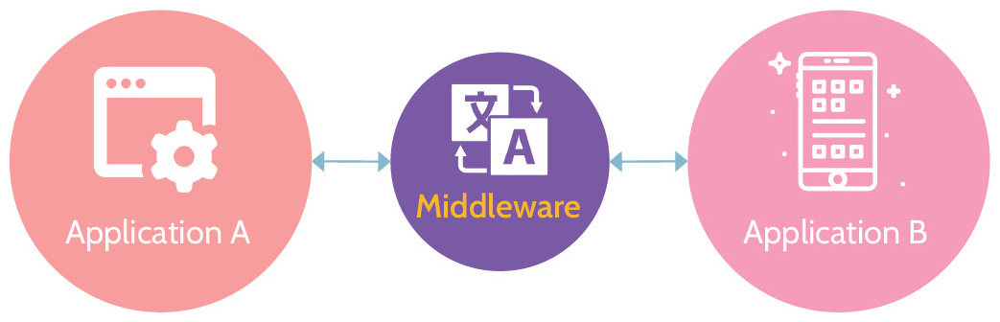
Figure 3-18: Middleware Representation
3.4.8 Abstraction and Virtualization
CORE CONCEPTS |
|
|
|
Abstraction
Abstraction is a concept that is used extensively in computing. It is an idea that the underlying complexity and details of a system are hidden. Think of driving a car. To the driver, the act of driving involves simple steps that essentially boil down to inserting a key or pushing a button (newer models), putting the car in gear, and driving-using the steering wheel, accelerator, and brakes as necessary. However, while all of this is happening, a significant amount of abstraction is taking place. A driver does not need to worry about how the engine works, or the hydraulic or electrical system, or any other components that ultimately make a car run. All this underlying complexity has been abstracted from the seeming simplicity of hopping in the car and driving away.
Abstraction is also used in programming. CPUs, at their core, understand 1s and 0s. From a human perspective, however, 1s and 0s are very hard to understand, and over the years numerous iterations of programming languages have evolved and abstracted the complexity of computing to human-readable form.
Virtualization
Carrying the concept of abstraction further, virtualization is the process of creating a virtual version of something to abstract away from the true underlying hardware or software. Specifically, to facilitate virtualization, a hypervisor is employed. A hypervisor serves as a layer of abstraction between underlying physical hardware and virtual machines (VMs).
3.4.9 Layering/Defense-in-Depth
CORE CONCEPTS |
|
Another important concept is the concept of layered defense or defense-in-depth. What this simply means is the protection of a valuable asset should never rely on just one control. If that control fails, the asset would be unprotected. Instead, multiple control layers should be implemented, and the control at each layer should be a complete control-a combination of preventive, detective, and corrective controls. Let's look more closely at this in the context of an example and while also considering the depiction of defense in depth provided in Figure 3-19.
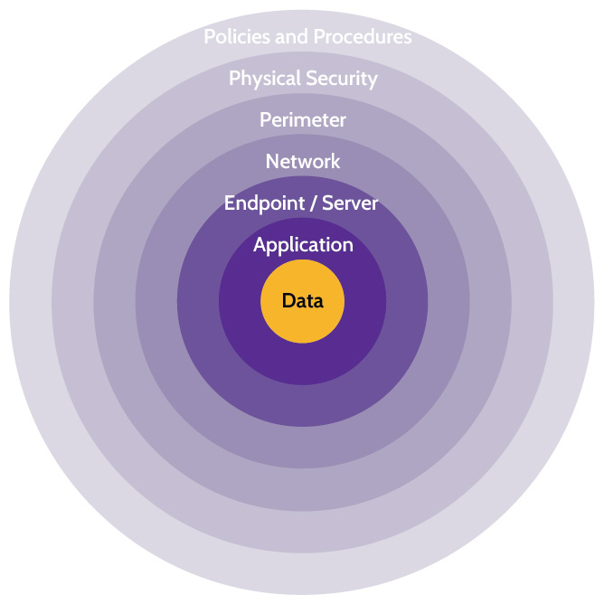
Figure 3-19: Defense in Depth
How many layers of defense does a company use to store and protect research and development information? Undoubtedly there's a fence around the building that could be serving as the first layer of defense. In addition, there might be CCTV cameras, and the fence could even be electric. The combination of these controls is preventive, detective, and corrective, thus constituting a complete control. After the fence, guards might be patrolling the area regularly. Next is the perimeter of the building. Similar to the fence, a combination of preventive, detective, and corrective controls exist. Walls, more cameras, and security guards collectively act as another layer of defense. Once inside the building, interior walls and locked doors are in place. Let's imagine that all these controls have somehow been bypassed, and someone reaches the computer system or the server room where highly sensitive data is stored. The system would need to be logged on to, and the related files would need to be identified and then unencrypted. As should be clear, there is a combination of preventive, detective, and corrective controls at each layer. This is the concept of layered security, where multiple layers of controls exist. If there's a failure at one layer, controls at other layers can effectively protect whatever valuable asset, like sensitive research and development data.
3.4.10 Trusted Platform Modules (TPM)
CORE CONCEPTS |
|
|
|
A TPM is a chip that performs cryptographic operations like key generation and storage in addition to platform integrity. For example, when a machine boots the TPM can be used to identify if there has been any tampering of critical system components, in which case the system wouldn't boot. So, a TPM is a piece of hardware-usually installed on the motherboard-that incorporates the international standard denoted by ISO/IEC 11889 on computing devices, like desktop and laptop computers, and mobile devices, among others.
In many ways, a TPM is a black box, meaning that commands can be sent to the TPM, but information stored within the TPM cannot be extracted. TPMs do not rely on an operating system or components external to the device for processing instructions; they have their own internal circuits and firmware. Furthermore, every TPM chip is unique because a unique and secret endorsement key is burned into the chip during production. An endorsement key is a special purpose RSA key that remains hidden and can only be used for encryption, which allows for TPM authentication.
Computers that contain a TPM can create cryptographic keys and encrypt them-using the endorsement key-so only the TPM can be used for decryption. This process is known as binding, and it helps protect the key from being disclosed. Computers can also create a bound key that is also associated with certain computer configuration settings and parameters. This key can only be unbound when the configuration settings and parameters match the values at the time the key was created. This process is known as sealing, and it refers to associating the key to the TPM. Binding and sealing are particularly important as it relates to maintaining the integrity of the TPM host computing device.
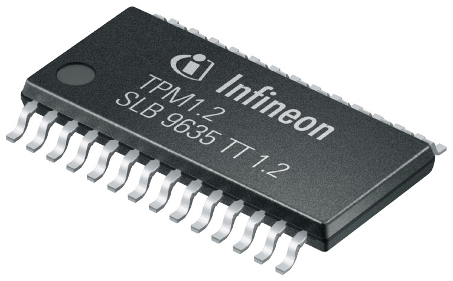
• Binding - A cryptographic operation in which data is encrypted in such a way that it is tied (bound) to a specific TPM's hardware and software configuration. For example, encryption keys that are stored on a TPM can be bound to it, ensuring that keys are only accessible by that specific TPM and that the system's integrity has not been compromised.
• Sealing - A cryptographic operation that involves encrypting data. However, unlike binding, sealing is not tied to the TPM's state or configuration. Instead, sealing is used to only allow the data to be decrypted in certain conditions, such as in the presence of certain software or after user authentication. As an example, sealing can be used to ensure that certain data can only be decrypted by the TPM if a user logs into a system with the correct credentials."
3.5 Assess and mitigate the vulnerabilities of security architectures, designs, and solution elements
3.5.1 Vulnerabilities in Systems
CORE CONCEPTS |
|
|
|
|
|
|
|
|
Single Point of Failure
What does the term single point of failure mean? To answer this question, let's examine Figure 3-20.
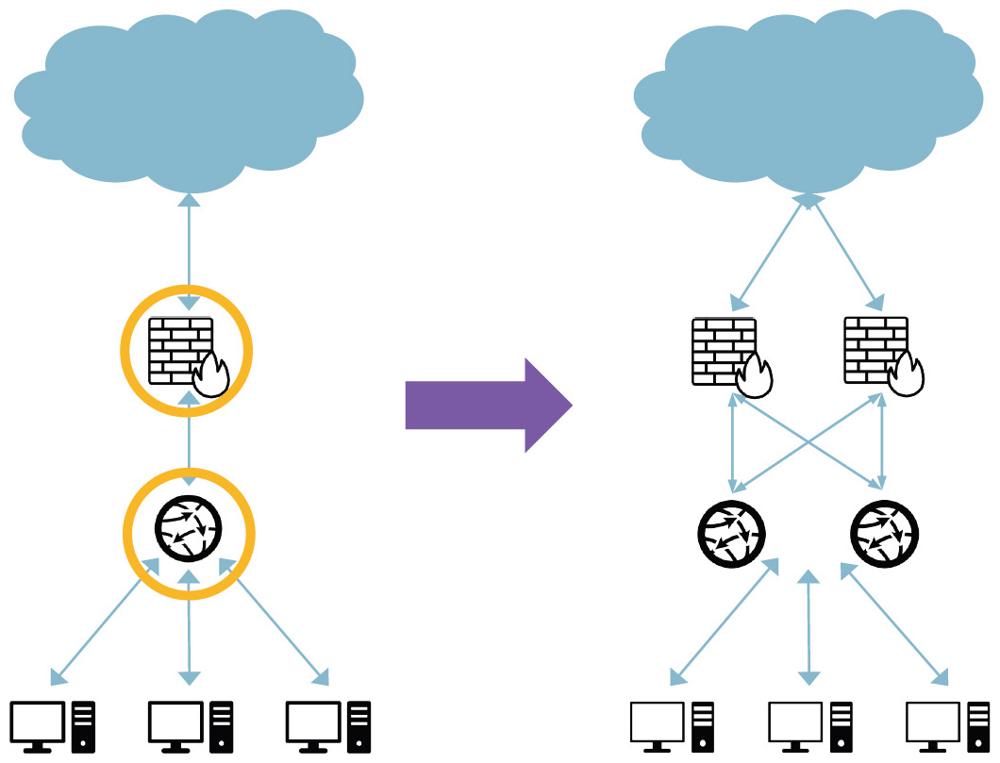
Figure 3-20: Single Point of Failure
The cloud represents the internet. Below it, the brick wall with the flame represents a firewall. Next, the ball with arrows pointing at every direction is a router. Finally, below the router are several computer systems. What are the single points of failure in the diagram? In this example, the firewall and the router are each considered a single point of failure; if either device fails, the connection to the internet is broken. In other words, a single point of failure means that when a single device or connection fails, it impacts the entire architecture.
Reduce Risk of Single Point of Failure
Single points of failure can become very dangerous for any organization and need to be dealt with accordingly, usually by implementing redundancy. Looking at the previous example, two firewalls and two routers could be installed to create redundancy and mitigate the risk of single points of failure. Each pair can be configured in what is known as "high availability" so that if firewall 1 fails, traffic can be rerouted through firewall 2; if router 1 fails, traffic can be rerouted through router 2. However, one point that's critical to keep in mind is that redundancy may not be feasible everywhere because it can be very costly. Firewalls and routers are expensive but often necessary. However, a solution like this should only be implemented where doing so is cost-justified.
Bypass Controls
Bypass controls are a potential vulnerability or new source of risk, but they are intentional. Let's examine this concept through an example: You need to access the administrative settings of your home router, but for some reason you can't remember the password you set up last time you did this. Being able to perform a factory reset of that device would allow you to enter the configuration utility with default credentials and set up the device from scratch.
The reset process is a bypass control-it's intentional. In the above example, if the primary method of entering the root password fails, it might need to be reset. Bypass controls are intentional for situations just like the one described. They are intentionally built into systems, and they need to be there.
Reduce Risk of Bypass Controls
The addition of bypass controls creates new risks. For example, if someone can gain physical access to a firewall, router, or similar system, they can reset the device. Bypass controls are needed, and other compensating controls should always be implemented with them to mitigate or prevent their exploitation. For example, physical security can be leveraged to protect the bypass control from being used. Only authorized people should have physical access to these devices. It's also worth noting that a bypass control isn't a covert channel because a covert channel is unintentional while a bypass control is intentional.
Ways to mitigate the risk associated with bypass controls include:
Segregation of duties
Logging and monitoring
Physical security
TOCTOU or Race Condition
What is TOCTOU? This stands for "Time-of-Check Time-of-Use" and essentially represents a short window of time between when something is used and when authorization or access for that use is checked. In other words, in that short time period, something unintended or malicious can transpire. This is also sometimes known as a race condition. A user or process attempts to "race in" and make changes to a system before another check to confirm that access is still appropriate. For example, assume there's 2 GB of RAM free and process 1 needs to use 1 GB. It checks and sees that is available. At the same time, process 2 needs 1.5 GB and checks and sees that it is available. A few milliseconds later, process 1 uses 1 GB, and immediately after that process 2 attempts to use 1.5 GB but is unable to, as that's not available anymore, so it unexpectedly crashes. That's an example of a race condition.
Reduce Risk of Race Conditions
To mitigate the risk of race conditions, the frequency of access checks should increase. The more frequent the checks, the greater the frequency of re-authentication, thus reducing the overall risk. However, frequent prompts to re-authenticate could also frustrate users; systems would be very secure, but no work would be accomplished if a user needs to authenticate every fifteen minutes. So, a balance between security and functionality is important.
What describes a race condition
Emanations
Emanations manifest in the form of unseen things leaking out of systems, like radio or magnetic waves, light, sound, and so on. Examples of radio waves would be Bluetooth and Wi-Fi, to name a couple, while magnetic waves would include waves from hard drives and similar devices.
Emanations represent a valid security concern since any time a device is emanating, valuable data could be available that a properly equipped eavesdropper or system could collect. An example could be something as simple as shoulder surfing, where someone is looking over the shoulder of a user and reading what's on the screen, which is emanating light. Someone can look over the shoulder, see that light, and read what's on the screen. Other much more complicated and advanced ways of doing this exist too. Emanations can potentially be intercepted and unauthorized information gathered as a result. Various ways exist to protect from emanation as described in Table 3-17.
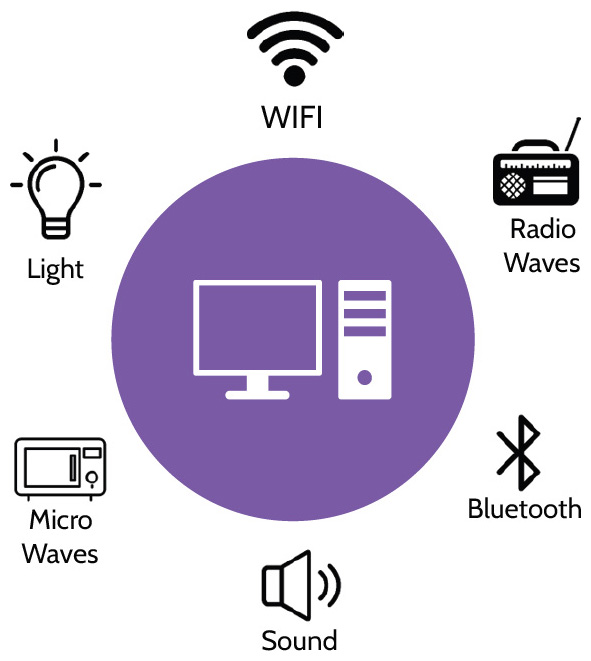
|
Shielding (TEMPEST) |
Walls, Faraday cages, copper-lined envelopes, and other methods of preventing sensitive information from leaking out or being intercepted. TEMPEST is a specification that covers techniques for shielding equipment to prevent emanations from being detected |
|
White Noise |
Strong signal of random noise emanated where sensitive information is being processed |
|
Control Zones |
Preventing access or proximity to locations where sensitive information is being processed |
Table 3-17: Emanation Protection
Shielding is one of the best ways to protect against unauthorized capturing of emanations. Shielding could be as simple as putting up a wall. Walls with no windows could be installed around an office to protect from shoulder surfing or unauthorized access. More complicated shielding is needed when dealing with electromagnetic emanations, radio waves, and similar, and this is usually accomplished through use of a Faraday cage. Examples of Faraday cages could be the sophisticated installations at very secure facilities or something as simple as a copper-lined envelope that prevents emanations from things like RFID cards. These are forms of shielding, which mitigate emanations.
Another way to mitigate or prevent the pickup of emanations is using white noise. White noise is a strong signal of random noise emanated amid offices, where computers might be used to process sensitive information. Most emanations from computer systems are weak, and the stronger signal of random noise prevents the weaker computer signals from being intercepted.
Finally, using control zones to prevent access or proximity to a device is another way to prevent the picking up of emanations from being intercepted. As most emanations are very weak and only are available in a short distance, if someone can't get near the related devices, they can't intercept the signal. So, the last way to mitigate or prevent emanations is using control zones, which are basically just physical security. If different layers of physical security exist that prevent someone from getting near a device, the ability to pick up the emanations is eliminated.
3.5.2 Hardening
CORE CONCEPTS |
|
Vulnerabilities in Systems
Let's focus on different vulnerabilities and types of systems. This will be done in the context of mobile devices, desktops, laptops, servers, and so on. However, before moving forward, it's worth taking a step back and focusing on the fact that, at a basic level, all these devices share much in common. They all consist of hardware components (like a CPU and RAM) and all have operating systems and software applications. To protect them, they need to be broken down into components, and each component would need to be secured. Each component within a given device is secured based on value.
Organizational relevance is another term you need to be familiar with, and it indicates how valuable something is to the organization. This is a term you could possibly see on the exam, and you need to remember that it implies value.
Reduce Risk in Client and Server-Based Systems
Examples of hardening include doing things like disabling unnecessary services on a computer system or uninstalling software that shouldn't be there (like an SFTP server running on a user's endpoint). A service represents a small subset of code running on a system for a particular reason. Most computer systems consist of numerous running services, which directly relates to the potential attack surface they have. The more complicated the system and the more running services are present, the greater the attack surface becomes. Contrarily, the simpler and less complex the system, the smaller the attack surface will be, which makes it more difficult for an attacker to find a way into that system. Disabling unnecessary services, updating the operating system, and patching the machines are important parts of system hardening. Other ways to harden systems include:
Installation of antivirus software
Installation of host-based IDS/IPS and firewall
Perform device configuration reviews
Implementation of full-disk encryption
Enforcement of strong passwords
Obtaining routine system backups
Implement sufficient logging and monitoring
What drives hardening decisions?
To make hardening efficient, it's imperative that business requirements be understood. The most important question to ask is, "What is this system meant to do?" That will guide the hardening effort. If a system is supposed to act as a web server, then it shouldn't have fifty different ports open and services installed, as that heavily increases an attacker's chances of breaching it. As most systems contain a significant number of settings and configuration options that need to be considered, hardening checklists should be followed to ensure everything is set properly. Most vendors publish hardening guides for their systems. If a vendor checklist does not exist, Center for Internet Security (CIS) and similar organizations publish hardening guidelines, which are great starting points and can then be customized as needed. Each time a system is deployed, a hardening procedure should be followed, and after each hardening process the resulting configuration should be verified to confirm the system is working as expected. Ideally, the initial and ongoing verification process should be automated (especially for larger environments), but whether manual or automated, it's a critical aspect of the hardening process.
3.5.3 Risk in Mobile Systems
CORE CONCEPTS |
|
|
Mobile Devices
Mobile devices are devices like iPhones, Android phones, iPads, and similar. They're small-form factor computing devices that are unbelievably powerful for their size and are typically carried in pockets and purses. The fact that they're small and powerful can allow them to store and access so much data and their mobility presents significant risk to most organizations.
Reduce Risk in Mobile-based Systems
What is the primary difference between MDM and MAM?
Mobile devices are built in small sizes so their owners can carry them around easily, which is exactly why they are also often lost or stolen. This fact leads most organizations to install additional security controls on them. Mobile Device Management (MDM) and Mobile Application Management (MAM) software help organizations secure devices and the applications that run on them. For example, MDM software allows a security administrator to perform tasks like enforcing different security controls or even wiping a device remotely, and mobile application management (MAM) software can secure applications that interact with corporate data. Note that oftentimes the two are included within a single application.
MDM and MAM can be combined with policy enforcement, application of device encryption, and related policies to adequately protect mobile devices if they are lost or stolen.
What are ways to reduce risk associated with mobile devices and workers?
Policies: One of the best ways to reduce risk related to mobile devices is using policies, like: Acceptable Use, Personal Computers, BYOD/CYOD (Bring Your Own Device/Choose Your Own Device), and Education, Awareness, and Training.
Process related to lost or stolen devices: Typically, this involves notification of IT and security personnel as well as a means by which the device can be remotely wiped. Note that remotely wiping is dependent upon the device being connected to the internet and a savvy attacker can easily prevent this from happening.
What is the best remote access security approach for mobile devices?
Remote access security: VPN and 2FA capabilities should be enabled by default, to prevent a mobile device from being used to connect to a remote network in an insecure manner (e.g., when a corporate employee is connecting to the company servers while located in a hotel, airport, or café during a business trip).
Endpoint security: Antivirus/malware, DLP, and similar MDM-provisioned software should be installed on mobile devices just like standard computing equipment. Additionally, the concept of hardening should be employed to minimize the potential attack surface of the devices.
Application whitelisting: Organizations should control which applications users may install on their mobile device through application whitelisting and not allow them to install anything not present on the approved application list.
3.5.4 OWASP Mobile Top 10
CORE CONCEPTS |
|
|
The Open Web Application Security Project (OWASP) Foundation is an organization that is driven by community-led efforts dedicated to improving the security of software, including software and applications that run on mobile devices. Among OWASP's many substantial contributions to the security community are the globally recognized OWASP Top 10 and OWASP Mobile Top 10 lists that are based on data from a variety of sources like security vendors and consultancies, bug bounties, and numerous organizations located around the world. The key element collected in every case is the Common Weakness Enumeration (CWE) and associated software or hardware that contain the CWE. In addition to collected data, OWASP surveys members of the community to identify potential new categories for inclusion in the Top 10.
OWASP Mobile Top 10 adheres loosely to OWASP Top 10 methodology, with the focus and categories being on mobile applications. The recent OWASP Mobile Top 10 is listed in Table 3-18.
|
M1 |
Improper Credential Usage |
|
M2 |
Inadequate Supply Chain Security |
|
M3 |
Insecure Authentication/Authorization |
|
M4 |
Insufficient Input/Output Validation |
|
M5 |
Insecure Communication |
|
M6 |
Inadequate Privacy Controls |
|
M7 |
Insufficient Binary Protections |
|
M8 |
Security Misconfiguration |
|
M9 |
Insecure Data Storage |
|
M10 |
Insufficient Cryptography |
Table 3-18: OWASP Mobile Top 10
What are the top vulnerabilities on mobile devices?
For each identified risk, specific details about it can be found, including threat agents, attack vectors, security weakness, technical impacts, and business impacts, as well as ways to prevent or mitigate the risk. From the perspective of a security professional, this type of information is invaluable, especially as the Top 10 list reflects a large cross section of global organizations and businesses and is updated according to industry feedback about attacks and vulnerabilities.
What is the OWASP Mobile Security Testing Guide?
In addition to the valuable information provided in the OWASP Mobile Top 10 list, the OWASP Foundation has developed a security standard for mobile applications that helps with security testing and reverse engineering. It's called the Mobile Application Security Testing Guide (MASTG). Another interesting OWASP project is the Mobile Application Security Verification Standard (MASVS), which helps guide secure development and testing for mobile applications.
3.5.5 Distributed Systems
CORE CONCEPTS |
|
|
|
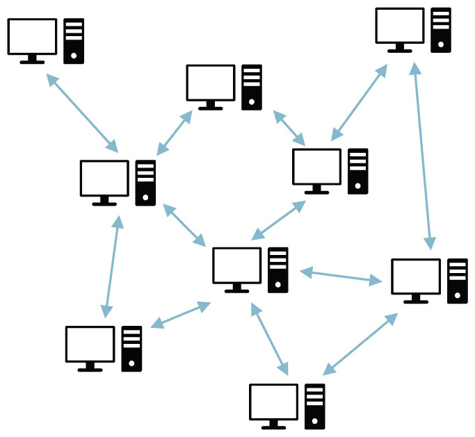
Figure 3-21: Distributed Systems
What is an underlying risk related to distributed file systems (DFS)?
Distributed systems are a number of different systems that are networked together and can communicate with each other as depicted in Figure 3-21. A great example of the world's largest distributed system is the internet. A company network is an example of a distributed system. Although there is significant value in connecting the systems within an organization and then connecting the organization to the internet, there are also significant risks, such as providing a means for potential attackers to gain access to the corporate network and cause mayhem (data breaches, denial-of-service, ransomware, etc.).
Distributed file systems (DFS) take the concept of distributed systems a step further by allowing files to be hosted by multiple hosts and shared and accessed across a network. DFS software helps manage the files being hosted and presents them to users as if they're stored in one central location.
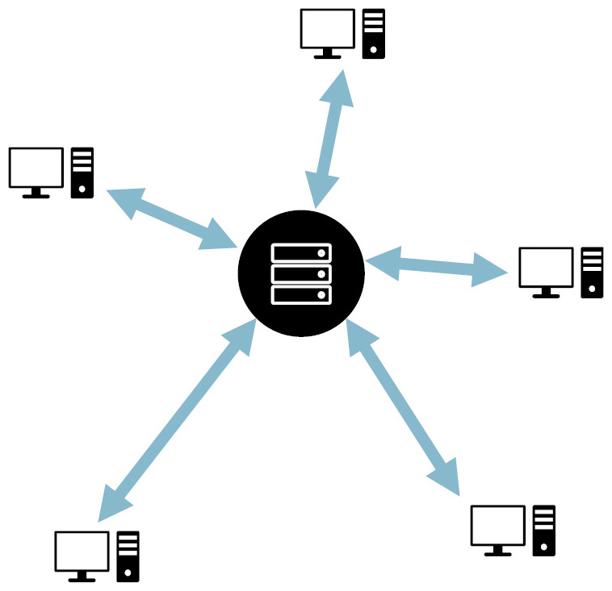
Figure 3-22: Grid Computing
Grid Computing
Grid computing, depicted in Figure 3-22, is like distributed systems as it still relates to systems that are connected together, but the thinking behind grid systems is that they're usually connected via a very high-speed connection to serve a greater purpose than simply passing the occasional email or file back and forth. Rather, grid systems are multiple systems working together to solve very complex problems that require more computing power that one system can provide; so, a number of systems are interconnected into a grid and programmed to work in unison to solve difficult problems.
A very interesting example of grid computing is the Search for Extraterrestrial Intelligence (SETI). SETI is a non-profit organization with the stated mission of searching for extraterrestrial life-they were looking for aliens. As a non-profit, SETI does not have access to significant amounts of funding to support their mission. Many years ago, they started a very interesting program based upon short periods of time SETI researchers had access to radio telescopes. When a researcher was done with their research project, there might be a few hours where the radio telescope went unused before another researcher began using it. During the hours of unused telescope time, SETI would point the telescope at a portion of the sky and record significant amounts of data. Not surprisingly, SETI accumulated tons of data, but they had no way to easily process it because high-powered computers are very expensive. Within the data, SETI researchers were looking for signals or patterns that might indicate alien communications. With seemingly no solution to the large data-set analysis needed, SETI solved the problem very creatively. They created a screensaver called SETI at Home, and anybody could download and run it on their computer. When a computer was idle and the screensaver activated, it would download a small chunk of the radio telescope data and process it. While processing, the screensaver displayed a cool visualization depicting what was happening, and the idea quickly resonated with people around the world. Millions of people around the globe downloaded and installed SETI at Home on their home computer and processed these little chunks of data. And in doing so they essentially created the world's largest distributed grid computer.
What's the security risk with grid computing?
Looking at the SETI at Home example, what happens if someone's computer sends inaccurate results? Does this skew a bigger subset of data? So, data integrity and data validation are relevant facets of the concept.
Likewise, inappropriate use of the grid computer is another. Here's an example of misuse: A group of Russian nuclear physicists were working in Siberia and had access to a mainframe system for simulating nuclear explosions and similar scenarios. After some time, they decided to stop using the mainframe for research and switched to cryptocurrency mining. Their new "research" was discovered, likely by a three-letter name Russian agency, which resulted in a permanent move somewhere even more remote than Siberia.
3.5.6 Inference and Aggregation
CORE CONCEPTS |
|
|
|
|
|
Data Warehouse
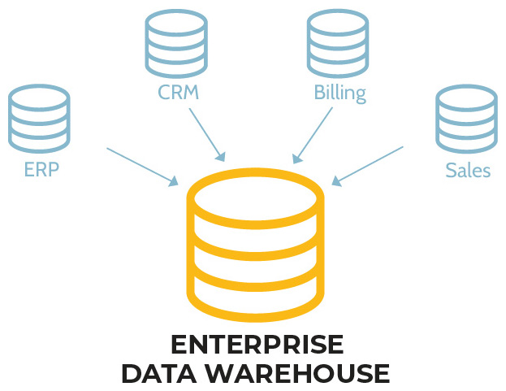
Figure 3-23: Data Warehouse
The idea behind a data warehouse, depicted in Figure 3-23, is to perform data analytics from a number of different data sets, with the hope of identifying interesting bits of information. Data warehouses are not new and in fact have been around for decades. The problem with them relates to the desire to analyze data from multiple data sets that are stored in different systems; it's challenging to do this, because each data set essentially resides on its own island. A common term related to data warehouses is data island, and it's used in the form of a question: "Where are the data islands located?" As this question alludes, the premise of a data warehouse is that all the data from these islands is brought together in one central location. Once in one location, the data is much easier to analyze and to search for trends and other interesting nuggets of information.
What are the security risks related to a data warehouse?
For a couple of reasons, it could be a single point of failure. The first relates to availability. If the data warehouse goes down, access to valuable data insights could be lost. The second relates to the fact that if someone gains unauthorized access to the data warehouses, they could have access to significant amounts of valuable information. So, in addition to some type of redundancy or a good backup plan, access control is an important topic to consider. When data is stored in multiple locations, fine-grained access control is easy. Only the finance people have access to finance data, HR people to HR data, and so on. When data from multiple locations is brought together in one location, managing access control becomes a much more complex issue.
Big Data
Unlike data warehouses, which have been around for some time now, big data is relatively new and has become very popular. The gist of big data is this: data from many different locations is brought into a central repository to be analyzed. On the surface, this sounds very similar to a data warehouse. What's the difference? Three things: variety, volume, and velocity.
Variety means that data can be pulled from a number of different sources. In a data warehouse, only relational data can be stored, only data in a clean table format, with rows and columns. In big data, just about anything can be stored-a text file, an Excel file, a Word document, etc. This fact represents the variety that can be found within a big data repository.
Volume refers to the size of the data sets. With a data warehouse, storage is typically restricted to the storage capacity of a single system; with big data, storage spans multiple systems. Think about this in the context of Google, arguably the best-known big data creator and consumer. When Google first started, what did it do? It indexed the entire internet, and it did so through the creation and use of an open source tool called Hadoop. Google wanted to determine the location of everything on the internet, which resulted in an enormous data set. When a query for anything on the internet was made, Google wanted results to be returned in milliseconds. Google is so proud of query results that it displays the amount of time a search takes. Google invented a number of technologies that enabled them to store vast data sets across many servers and to be able to perform analytic searches across this massive data set very quickly. The technologies built by Google eventually ended up in Hadoop and similar tools. Google wasn't the only one to invent tools like Hadoop, but it's companies like Google that invented ways of dealing with these big data problems. This is the volume part; enormous volume sets can be stored in big data.
Velocity refers to the fact that data can be ingested and analyzed very rapidly in big data-even faster than is possible with data warehouses.
Examples of big data tools include Hadoop, MongoDB, and Tableau.
Data Mining and Analytics
The primary driver behind data warehouses and big data is the desire to identify trends and other interesting insights. Through the analysis of seemingly disparate data, otherwise invisible relationships and little nuggets of valuable information can be gleaned. These insights are typically referred to as inference and aggregation. Aggregation pulls data into one location. Inference tries to infer things; it tries to identify bits of information in the data. As the rest of this section and the examples will show, inference, especially unauthorized inference, can create a significant risk to an organization. Unauthorized inference can take information from the hands of key decision makers or secure systems and expose it to an entire organization, the competition, or even to the enemy.
Here's a real-life example that helps illustrate. A large retailer had been sending pregnancy-related advertisements and coupons to someone's teenage daughter without that person even knowing their daughter was pregnant. How did they know this fact? It was all about what she had purchased in the previous days and weeks. Basically, they were looking at her buying habits as they employ many data scientists who focus on identifying really interesting nuggets of information based upon consumer buying habits. They look at the massive data sets gathered from all their stores and can figure out trends and, in this case, that a particular consumer was interested in pregnancy-related items. Note that this isn't something illegal, as they were merely analyzing available consumer data. This event made national news, but they didn't stop their practices of mining and analyzing data in order to send targeted advertising; they simply grew more savvy in their approach. Now, instead of a full booklet of pregnancy-related items, a lawn mower, a pool table, and other non-pregnancy-related items are included in the advertisement to better disguise things.
Inference and aggregation can obviously cause problems for organizations. Another example where this can be an even greater issue is in a large bank. Most large banks have multiple divisions, including a brokerage arm-stock traders-as well as a mergers and acquisitions (M&A) arm, which focuses on helping companies raise money in the equities and debt markets, purchase companies, and so on. In this context, the bank's stock traders would love to know what the M&A folks are doing because they could then offer the best trade advice to their customers. But that's not allowed, as it would constitute insider trading. Banks must be very careful to prevent insider trading by preventing employees from inferring things they're not supposed to know. To summarize, Table 3-19 denotes the definitions of aggregation and inference.
|
Aggregation |
Inference |
|
Collecting, gathering, or combining data for the purpose of statistical analysis |
Deducing information from evidence and reasoning rather than from explicit statements |
Table 3-19: Aggregation and Inference
Understand the difference between aggregation and inference and how inference can be mitigated
Reduce Risk of Inference and Aggregation
One method to reduce the risk of unauthorized inference is using "polyinstantiation," which allows information to exist in different classification levels for the purpose of preventing unauthorized inference and aggregation (note that more detail about this will be provided in Domain 8).
3.5.7 Industrial Control Systems (ICS)
CORE CONCEPTS |
|
|
|
Industrial control system (ICS) is a general term used to describe control systems (hardware and software) used in industrial processes and critical infrastructure. ICSs are the computer systems and software that control things like power grids, nuclear power plants, automobile manufacturing plants, and similar systems. They are mission critical and very sophisticated with one of the inherent challenges being the specialized software they require. If the software for a power grid or nuclear power plant malfunctions, the consequences can be dire, and it may even result in loss of life. This type of software requires considerable oversight. However, because of the high level of customization an attempt to upgrade the OS, for example, may render the component non-functional. For example, if it was designed to run on Windows XP, an upgrade of that system to Windows 7 could cause the customized software to break. So, a huge challenge with ICS is they are often running on antiquated hardware and software. In addition, nobody wants to tamper with them out of fear that doing so could render them inoperable. As a result, these components that control very important and critical functions can be running on very insecure systems.
Operational technology (OT) is a broader term than ICS. It refers to the hardware and software technology used to monitor and control physical processes, devices, and industrial systems. ICS is a subset of OT that focuses on the control and automation of industrial processes.
Reduce Risk in Industrial Control Systems
Understand the risk associated with ICS and how best to reduce this risk
One of the best ways to protect ICS is keeping them offline, also known as "air gapping" or creating an "air gap." What this simply means is that ICS devices can communicate with each other, but the ICS network is not connected to the internet or even the corporate network in any way. So, even if someone does try to connect to these ICS systems from the internet or corporate network, they'll be unable to do so.
Patching Industrial Control Systems
Understand the implications of patching ICS or alternative ways to mitigate risk if patching is not possible
Industrial control systems by their very nature are difficult to maintain, especially where security is concerned. Often patching of ICS has been avoided, as patching these critical systems may cause unintended consequences and downtime. However, the ubiquitous and far-reaching nature of modern networks (where organizational and ICS networks now often share many of the same pathways, and the use of "smart" technology further blurs the lines and increases potential attack surfaces) requires that ICS be patched when needed. Strong configuration management processes, good patch management and backup/archive plans, and so on should be in place and used when and where possible. When patching ICS systems is not possible (or not possible to the degree needed), additional mitigating steps can be taken to reduce the risk and impact of disruption of critical infrastructure:
Understand each type of ICS at a high level
Implement nonstop logging and monitoring and anomaly detection systems to rapidly detect nefarious activities within ICS networks.
Conduct regular vulnerability assessments of ICS networks, with particular focus on connections to the internet or direct connections to internet-connected systems, rogue devices, and plaintext authentication.
Use VLANs and zoning techniques to mitigate or prevent an attacker from pivoting to other neighboring systems if the ICS is breached.
Additionally, privileged access management and privilege task automation tools can potentially be deployed to help manage risks associated with legacy systems often found within ICS.
The three major types of ICS that should be recognized are described in Table 3-20.
|
SCADA |
DCS |
PLC |
|
|
|
|
Table 3-20: ICS Types
3.5.8 Internet of Things (IoT)
CORE CONCEPTS |
|
|
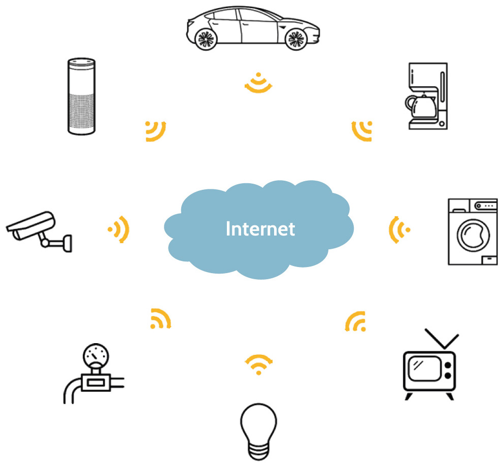
The term Internet of Things (IoT) refers to the multitude of devices that are connected to the internet and probably shouldn't be connected to it. IoT is the concept that tiny processing computers, the network cards that allow you to connect a device to the internet, have become so cheap that manufacturers are putting them in everything, including refrigerators, washing machines, dryers, cars, toasters, and so on. It seems that some type of network functionality is being installed in most similar devices these days. What's the risk here? Manufacturers are installing computer and networking technology into the things they build, but the technology being installed is mass-produced; the computer and networking technology is made very cheaply and contains little to no security. After a refrigerator is purchased, how
often is built-in technology upgraded? How often is the firmware upgraded on a fridge? The answer to both questions is likely "Never." Nobody thinks about patching their toasters, so the issue persists and grows; very insecure devices are being installed in hardware with a refresh cycle of years. More to the point, very insecure devices are connected to home, and even business, networks. If somebody can remotely connect to one of these devices, they could potentially gain a foothold inside your network and use this access to pivot to bigger targets, like personal and business computers. This is a very real security problem.
Let's briefly touch on the topic of distributed-denial-of-service (DDoS) attack in the context of IoT. A DDoS attack takes place when many computer systems are harnessed together to create what's called a botnet. The botnet can then be used for malicious activities, including those aimed at only one victim. Because so much malicious traffic from so many different sources is aimed at that victim, it is commonly going to be brought offline. In 2016, one of the largest DDoS attacks in history occurred. A bug was found in security cameras and a malicious actor chose to exploit it. Think about it-millions of security cameras have been sold and installed throughout the world; they've been installed in homes, businesses, and anywhere else people might want visibility. Many of these cameras included cheap, mass-produced, highly insecure technology components mentioned earlier; thus, the cameras were IoT devices with zero security. The malicious actor identified a significant vulnerability in the camera IoT technology and proceeded to install malware on millions of cameras around the world; a botnet of massive proportions was created and then used to perpetrate one of the largest DDoS attacks in history. Security cameras and massive DDoS; ironic to say the least, and this highlights the primary problem with IoT devices. They are very insecure and often used in devices that aren't replaced frequently, and owners won't think to upgrade the technology. This is the challenge, and fortunately companies like Microsoft are doing research in this area, specifically focused on building secure chips that can still be mass-produced inexpensively.
Reduce Risk of Internet of Things (IoT)
Reducing the risk associated with IoT devices isn't easy. One way would be to not use IoT-enabled devices and equipment unless you absolutely must. If you do, be very thoughtful about their installation, especially where a home or corporate network is concerned. Make sure the technology remains up to date, connect them to a segregated part of the network, and ensure adequate protection is built around it and ensure you scan that network for vulnerabilities and mitigate those accordingly.
3.5.9 Cloud Service and Deployment Models
CORE CONCEPTS |
|
|
|
|
Cloud Computing
Cloud computing allows individuals and organizations to access and use computing resources (like servers, storage, databases, networking, software, and more) over the internet, on a pay-as-you-go basis. This enables users to access data and applications from anywhere, without having to maintain physical hardware and software infrastructure themselves. It's worth noting that it's also possible to operate a private cloud where the user of the private cloud owns and operates all the hardware and software.
Six defining characteristics of cloud computing are listed in Table 3-21.
|
On-demand self-service |
This means when particular resources are needed, they can be provisioned immediately and automatically. Whether the resource is additional storage, more CPUs, more RAM, and so on, a cloud consumer can provision or de-provision as they see fit. |
|
Broad network access |
This means the cloud can be accessed from anywhere, using various types of devices, like smartphones, tablets, laptops. In fact, most applications in use today are Software as a Service and are accessed through a web browser connected to the internet. |
|
Resource pooling |
Resource pooling relates to sharing the three primary sources of cloud computing (processors, disk space, and the network). They are almost never directly accessible because of typically being shared-pooled-among multiple users. So, resource pooling describes the relationship between the fundamental hardware that makes up the compute, storage, and network resources-the pool-and the multiple customers that utilize those resources. This is one of the key characteristics of cloud computing that points to significant value and economies of scale for consumers and cloud providers. |
|
Rapid elasticity and scalability |
Rapid elasticity/scalability relates to how quickly compute, storage, and network can be increased or decreased in the cloud. Resources can be rapidly provisioned and deprovisioned-usually automatically or with just a few clicks. |
|
Measured service |
Measured service means the cloud provider tracks resource usage very closely, to the point that a cloud customer only pays for the resources used, measured in very small increments-minutes, or even seconds. |
|
Multitenancy |
A final characteristic of cloud computing is multitenancy. Multitenancy means that everybody has access to the cloud-it's open to the public-and cloud resources could potentially be shared with anybody, including malicious third parties being present as tenants on a cloud server. From a security perspective, multitenancy implies significant risk, which places responsibility on cloud providers to implement very strong security controls and isolation between clients. |
Table 3-21: Main Cloud Computing Characteristics
Note that multitenancy is not always included among the characteristics of cloud computing because many organizations utilize a private cloud. By nature, a private cloud is only accessible by a single cloud consumer. A public cloud, on the other hand, does reflect multitenancy.
Cloud Service Models
There are three primary service models used in the cloud, depicted in Figure 3-24.
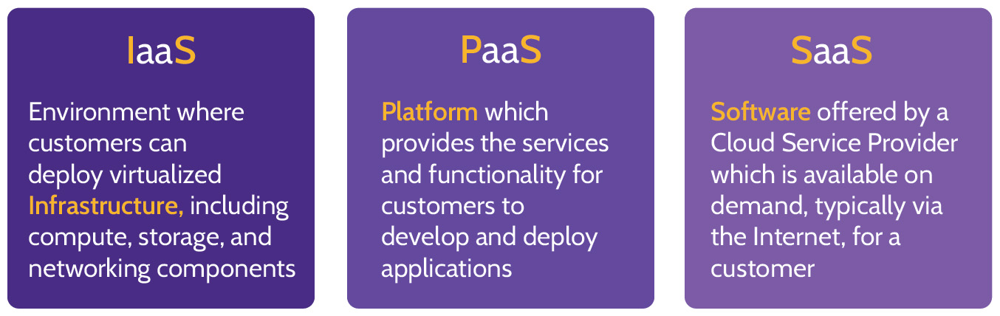
Figure 3-24: Cloud Models
Software as a Service (SaaS) in essence provides access to an application which is rented-usually via a monthly/annual, subscriber-based fee-and the application is typically web-based. A great example of SaaS is Office 365/Exchange 365. Rather than hosting their own email server and dealing with applications like Word and Excel in house, many organizations license the use of these applications by paying Microsoft monthly. This is Software as a Service-simply an application that is hosted in the cloud and accessed through a web browser, usually via monthly subscription.
At the other end of the spectrum is Infrastructure as a Service (IaaS). To understand IaaS, think of it almost like a virtual data center. What is housed in a real data center? Servers, networking equipment, firewalls, switches, routers, storage servers, IDS, IPS, database servers, email servers, and similar devices are found in data centers. With IaaS, all these devices and equipment can be found (in the virtual sense of course). Instead of a physical firewall, IaaS would offer a virtual firewall. Instead of a physical database server, a virtual database server is used to host databases. Essentially, an entire physical data center can be presented virtually through IaaS. Devices can be interconnected, and network segments created, just like in a physical data center. This is Infrastructure as a Service.
In between SaaS and IaaS sits another cloud service: Platform as a Service (PaaS). Let's imagine a customer that wants a custom application. This customer searches the marketplace, but they're unable to find existing software that meets their needs; so, they decide to create their own application and build it from the ground up. Rather than building a development environment too, PaaS provides the infrastructure and platform upon which the application can be developed, tested, and run. Eventually, once the application is live, it essentially looks and functions like SaaS.
Two additional cloud service models that are now pervasively used are Containers as a Service (CaaS) and Function as a Service (FaaS). Relative to the predominant service models noted above, CaaS and FaaS fit in roughly as shown in Figure 3-25.
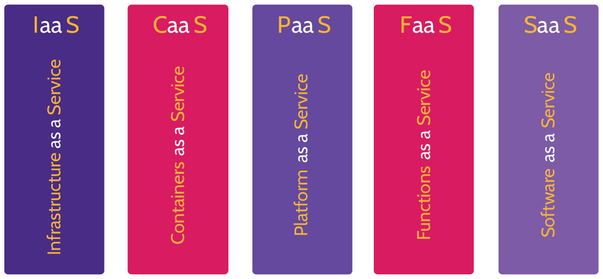
Figure 3-25: CaaS and FaaS added to IaaS, PaaS and SaaS
To understand Containers as a Service (CaaS), it's first important to understand what is meant by the term container. A container is simply a package of software that contains all the components needed to run the software on any host system. Quite literally, because of this fact, a containerized application can be ported from one system to another and be up and running in a very short period of time. To make this point clearer, CaaS allows for multiple programming language stacks, like Ruby on Rails or node.js, to name a couple, to be deployed in one container. PaaS, on the other hand, requires multiple deployments, with each deployment explicitly supporting one or another stack. With the basic premise of a container being understood, CaaS automates the hosting and deployment of containerized software applications and allows development teams to focus on more important matters. In a world where software testing and updates previously took significantly longer, CaaS environments allow for agile DevOps (ideally SecDevOps) to become reality and to bring more value to customers and to the organizations utilizing this model.
To best understand Function as a Service (FaaS), a couple of other terms should also be understood: serverless and microservices. The word serverless is often associated with information technology architectures and implies an architecture where developers don't have to worry about dealing with servers or other underlying infrastructure. They can just focus on their code. Similarly, microservices are very particular, self-contained services that provide specific business functionality. Due to their self-contained nature, they can be easily and quickly coupled to create stacks of microservices that support a business process or requirements, and they can be decoupled just as easily and quickly. With this understanding, FaaS really describes serverless and the use of microservices to accomplish business goals inexpensively and quickly. Unlike PaaS, FaaS does not require supporting infrastructure to function. PaaS, at its core, requires servers and supporting infrastructure to be available, which costs money, even when idle. FaaS, on the other hand, only requires the underlying microservices to be present, and only when microservices are invoked are costs involved. As with other cloud-based services, FaaS can scale quickly to support growing and shrinking needs. AWS Lambda is one of the earliest examples of FaaS.
Understand cloud service provider and cloud customer responsibilities, depending upon the cloud service model in use
Figure 3-26, the purple shading of boxes denotes cloud provider responsibility while the pink shading denotes customer responsibility.
In every case, in the public cloud, anything related to physical security, physical devices, underlying compute nodes and infrastructure, and hypervisors is going to be managed by the cloud service provider.
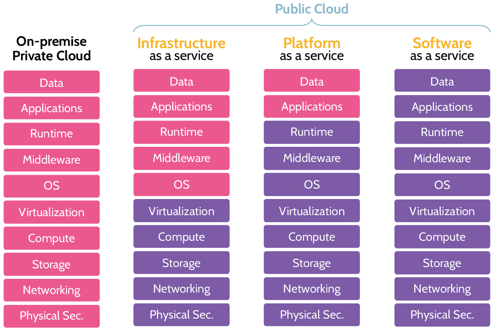
Figure 3-26: Responsibility between Client and Cloud Service Provider
Starting from the right, with Software as a Service (SaaS), the purple shading implies that the cloud service provider is responsible for all the items noted in the boxes, so Data, Applications, Runtime, Middleware, and OS are all under the cloud provider's remit. This model provides the client peace of mind as they don't have to deal with any administration and just consume a service, e.g., Google Mail. With Platform as a Service (PaaS), the cloud service provider is responsible for most of the items, but the client is now responsible for their applications and data. With Infrastructure as a Service (IaaS), the client has the greatest degree of control over portions of the cloud environment. The client can create their own network, install their operating systems, and configure the environment exactly as needed.
However, it's important to note that even in cases where the cloud service provider appears to have the most responsibility over the cloud environment, significant responsibility is still often shared between the cloud service provider and the cloud customer, and this fact must be considered carefully. Especially where boundaries and therefore potential shared responsibilities exist, the cloud customer and cloud service provider must explicitly clarify who is responsible for what.
One example highlights this fact. In SaaS, access control is a shared responsibility. The service provider is responsible for creating the security kernel and all the security-related components that make up the environment, but the customer is responsible for creating user accounts, setting access permissions, and ongoing review and maintenance of those accounts.
Regardless of the nature of shared responsibility, one thing is always constant when talking about the relationship between the cloud service provider and the cloud customer: the cloud customer is always accountable for their data and other assets existing in a cloud environment.
Cloud Deployment Models
Several cloud deployment models exist, as depicted in Table 3-22, and these refer to how the cloud is deployed, what hardware it runs on, and where the hardware is located. Most of the deployment models are intuitive and easy to understand.
The first model is public cloud, and the name implies who can access it-everybody, the public. A public cloud is in the cloud service provider's data center and consumers are simply accessing it as a service (e.g., Gmail). It's accessible by anyone.
A private cloud is only accessible by a single customer, so it's private to that customer. If it's an on-premises private cloud, this means it's in the customer's own data center; but it can also be in a cloud service provider's data center, where a private, dedicated cloud is provided for use only by the customer. This would be considered an off-premises private cloud.
A community cloud is a cloud that is used by a group of users that share common needs or interests, like a group of hospitals, for example. One of the largest community clouds is GovCloud. It was built by AWS to be FedRAMP-compliant so that US Government agencies can use it.
The last cloud deployment model is a hybrid cloud. A hybrid cloud is any combination of the three previously mentioned, and it is usually a combination of a public and private cloud. For example, many organizations will store their low-sensitivity data in the public cloud, and their high-sensitivity data in their own private cloud.
|
Infrastructure MANAGED by |
Infrastructure OWNED by |
Infrastructure LOCATED |
ACCESSIBLE by |
|
Public |
Third-Party Provider |
Third-Party Provider |
Off-Premises |
Everyone (Untrusted) |
|
Private / Community |
Organization or Third-Party Provider |
Organization or Third-Party Provider |
On-Premises or Off-Premises |
Trusted |
|
Hybrid |
Both: Organization and Third-Party Provider |
Both: Organization and Third-Party Provider |
Both: On-Premises and Off-Premises |
Both: Trusted and Untrusted |
Table 3-22: Cloud Deployment Models
Protection and Privacy of Data in the Cloud
What should be a primary concern of an organization considering a move to the cloud?
Regardless of the cloud service or deployment model utilized, organizations should take every precaution to ensure that proprietary, personal, and other private information remain protected. In addition to implementing strong access controls, strong encryption practices should be used when and where necessary to properly secure this data. This is especially true when an organization makes the initial decision to move from legacy, on-premises infrastructure to that of a cloud provider. In cases like this, best practices indicate that data should be encrypted and secured locally and then migrated to the cloud.
3.5.10 Compute in the Cloud
CORE CONCEPTS |
|
|
As noted earlier, one of the characteristics of cloud computing is resource pooling, which describes the aggregation of compute, network, and storage resources for customer use. Cloud customers can access compute resources through:
Virtual Machines (VM)
Containers
FaaS
Hypervisors, Virtual Machines (VM), Containers, Serverless
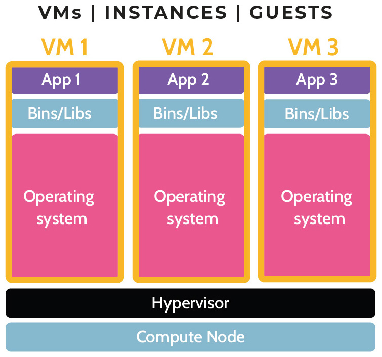
Figure 3-27: VM and Hypervisor
As illustrated in Figure 3-27, a hypervisor is the software that runs directly on hardware or on an operating system and allows multiple operating systems to share the resources of a single physical machine, also known as a compute node. A hypervisor is often referred to as a Virtual Machine Manager/Monitor (VMM), and allows administrators to manage virtual machines (VMs)-create, edit, and start/stop-as well as view VM performance and other statistics. Common hypervisor examples include Oracle VirtualBox and VMware Workstation.
A virtual machine (VM) resembles a computer; however, everything is emulated. Instead of an actual physical machine that contains a CPU, RAM, hard disk(s), and so on, everything is emulated using software. The result is a VM that can host an operating system and applications. In an ideal environment, specific functions would be segregated among individual virtual machines, and each virtual machine would be hardened and secured according to the value of the data being processed on the machine. This approach would make a potential attacker's job much more difficult, because multiple virtual machines would need to be attacked and compromised.
Virtual machines are commonly referred by a few different names: Instances, Guests and sometimes even Hosts.
Effective and beneficial cloud environment design considerations
From a security perspective, virtual machines are very useful. Business functions can be isolated on a per-virtual-machine basis. In other words, rather than having numerous functions (services) on one machine, they can be separated, with each virtual machine supporting a specific function (e.g., a web server, or a database server, or an FTP server, etc.). This segregation and specialization allows each virtual machine to be very locked down and hardened to a specific function-greatly reducing the attack surface and the blast radius if a machine is compromised.
The best point of attack to access multiple virtual machines
A useful capability of virtual machines is the ability to create a baseline image of a virtual machine. An image is essentially, a pre-built virtual machine ready to be deployed. Once an image has been created it is easy to spin up numerous virtual machines from the pre-built image.
Compromising the hypervisor would give an attacker access to the multiple virtual machines it controls, so considerable hardening should be enforced to avoid that.
Virtual Machines versus Containers
Before looking more closely at containers, a quick side-by-side comparison of virtual machines and containers is useful to consider as illustrated in Figure 3-28.
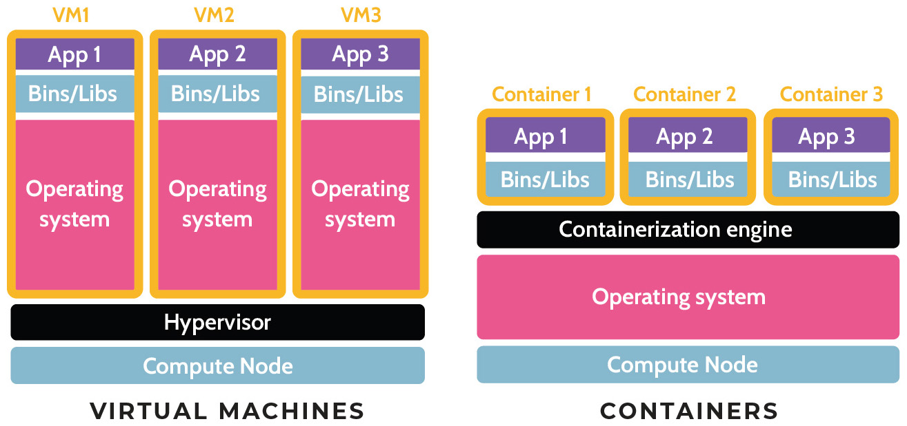
Figure 3-28: VMs vs. Containers
Virtual machines are quite "heavy" relative to containers. For every virtual machine being created, an accompanying operating system must also be installed. The hypervisor acts as the layer of abstraction that manages all the underlying physical infrastructure on behalf of each virtual machine. Containers, in comparison, are quite lightweight relative to virtual machines. Multiple containers can be supported by a single operating system, and the containerization engine acts as the layer of abstraction between the containers and the operating system. Relative to each other, containers are more efficient and portable than virtual machines. Virtual machines virtualize an entire computer system; containers only virtualize software and dependent supporting components.
Virtual machines and containers offer advantages and disadvantages relative to one another, some of which are noted in Table 3-23.
|
Pros |
Cons |
|
Virtual Machines |
|
|
|
Containers |
|
|
Table 3-23: VM and Container Comparison
Containers
As noted, containers are highly portable, self-contained applications, with an abstraction layer known as the containerization engine sharing and leveraging resources of that operating system on behalf of each container. As highlighted in Figure 3-29, multiple containers can exist and operate in the context of one operating system. Each container supports one application and contains all the supporting binaries/libraries and other dependent components necessary for the application to run properly and to be easily ported to another system.
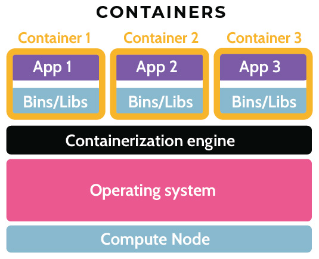
Figure 3-29: Containers
Dividing Up Services
As shown in Figure 3-30, all functionality of a monolithic application is wrapped together as a single unit, whereas with microservices and serverless, functionality is more defined and self-contained in smaller or individual units.
Monolithic applications typically comprise of a back-end database, an application and a user interface. Correspondingly, this implies a single large code base, and changes to an application may require updates to all three areas. In recent years, application development has trended toward the utilization of microservices, which has been further leveraged via serverless architectures found in cloud computing.
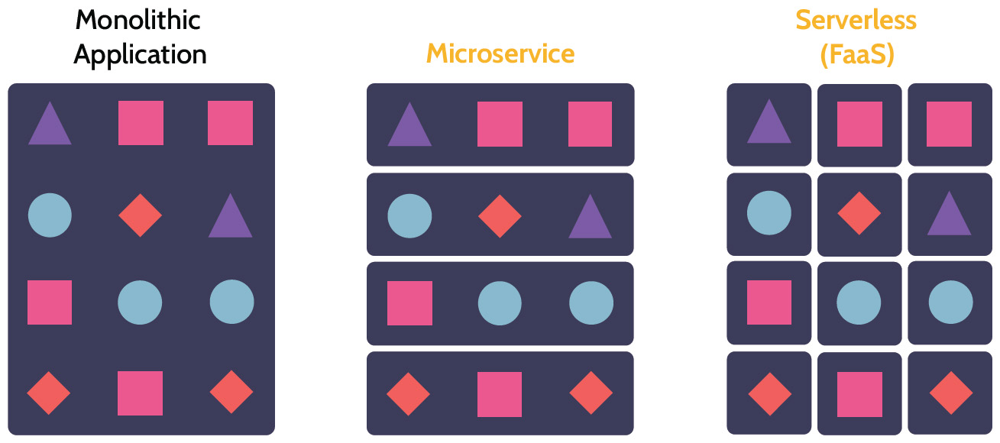
Figure 3-30: Monolithic vs. Microservices and Serverless Computing
Microservices
A great way to understand a microservice is to imagine one piece of functionality found in a monolithic application operating as a stand-alone service or small set of related services-a microservice. Compared to a monolithic application that exists and operates as one unit, microservices exist and function as separate units that are loosely coupled via API calls. Due to the loosely coupled nature of these services, some of the disadvantages inherent with a monolithic application are mitigated, as each part of application functionality operates as a separate service. If one piece of functionality needs to be scaled, it can be updated and redeployed quickly. The same holds true if new functionality is needed-a new microservice can be built and deployed quickly. The fact that an application is composed of multiple, loosely coupled components allows for better overall understanding of the application, and functional components can be reused across multiple applications. Relative to monolithic application development projects, microservice components can be built more quickly and cost-effectively using much smaller development teams. At the same time that microservices mitigate many of the disadvantages found with monolithic applications, weaknesses of microservices include additional complexity, due to the distributed nature of the architecture. Connections between modules and databases particularly need to be considered, as does testing of components, as an issue with one service could potentially impact a multitude of other services due to the interdependent nature of microservice-based applications.
Function as a Service (FaaS) / Serverless
The term serverless takes the basic premise of microservices-hyperfocused, independent pieces of functionality coupled together through APIs-and extends it to the cloud. With serverless, microservices are run in the cloud. AWS Lambda is a perfect example of a serverless environment. With serverless, as the name suggests, the compute service does not involve the provisioning or management of servers. This fact points immediately to cost savings. Rather, when the desired functionality is needed, it can be invoked, and only the actual compute time required is charged. If the serverless functionality goes unused-for whatever reason-there is zero cost. Additionally, and like other potential benefits associated with cloud computing, serverless allows for high availability, scalability, and simple cost management, among others.
3.5.11 Cloud Forensics
CORE CONCEPTS |
|
|
|
With any type of investigation that involves on-premises computing equipment, the forensic process is generally straightforward and primarily revolves around securing the scene, not powering the equipment off or on (thus maintaining its original state), capturing data that may reside in volatile memory or storage areas, and making bit-for-bit copies of hard drives and other non-volatile storage devices. Where cloud forensics and investigations are concerned, the forensics process can become much more complex. Because public cloud environments involve multiple customers sharing the same physical infrastructure, including hard drives, physical access to the equipment and storage devices that may contain information relevant to the investigation is typically not possible or allowed.
What types of evidence a cloud forensics investigator might request
In these cases, rather than physical disks and systems, an investigator will most likely request copies-snapshots-of the virtual disk and VM images to obtain evidence and information pertinent to the investigation. A virtual disk is simply a virtual hard drive allocated to a customer from an actual physical hard drive. So, a physical hard drive in a system in a data center might have 1TB of available hard disk space, and one customer might be allocated 250GB of this space for their use. The 250GB of space-the virtual disk-would appear as a stand-alone hard drive to the customer, and it would only be available for their use. Put in bigger context, the virtual disk would be connected to a virtual machine (VM)-the system that appears as a stand-alone system to the organization and utilizes CPU, RAM, and other components of a physical system in a data center. As mentioned above, copies of virtual disks and VMs are known as snapshots. A snapshot is a "snap" of the state and data of a virtual disk or a virtual machine taken at a point in time. In essence, a snapshot is a backup of the disk or the machine. Best practices indicate that snapshot schedules should be set up as part of the host and virtual machine setup and configuration, though snapshots can also be taken on an as-needed basis. Because snapshots capture the state of a virtual machine at the time they're taken, they can prove invaluable for the sake of an investigation. In addition to capturing data stored in non-volatile storage locations, snapshots can also capture evidence that may reside in volatile memory and similar locations on the virtual machine. As with other types of digital evidence, two bit-for-bit copies of a snapshot should be created for purposes of forensic analysis, with the original snapshot and one copy being essentially locked up and untouched and only the second copy actually being examined.
|
SaaS |
|
|
Paas |
|
|
IaaS |
|
Table 3-24: Forensic Data that Can Typically Be Captured by Service Model
Table 3-24 shows the type of forensic evidence that can be acquired based on the cloud model being used. Cloud forensics presents significant additional challenges relative to those typically found with traditional digital forensics. In fact, NIST published a document in August 2020 entitled "NIST Cloud Computing Forensic Science Challenges" that summarized research in this area by members of the NIST Cloud Computing Forensic Science Working Group. Specifically, members of the research team identified nine challenge categories related to cloud forensics as outlined below:
1. Architecture
2. Data collection
3. Analysis
4. Anti-forensics
5. Incident first responders
6. Role management
7. Legal
8. Standards
9. Training
Within each challenge category, the team further identified subcategories and specific challenges within each subcategory. For example, under the category Architecture there are several subcategories: Data Segregation, Multitenancy, and Provenance. Under the subcategory Data Segregation is a specific challenge noted as Potential evidence segregation. Under multitenancy, three specific challenges are noted: Errors in cloud management portal configuration, potential evidence segregation, and boundaries. Looked at as a whole, sixteen subcategories exist under the nine challenge categories noted above, and within the sixteen subcategories sixty-five specific challenges are identified. Cloud forensics is a complex matter and one that no doubt will continue to pose challenges for years to come as related technologies continue to evolve.
3.5.12 Cloud Computing Roles
CORE CONCEPTS |
|
|
|
|
|
The role that is always accountable for data in the cloud
Along with the various cloud characteristics and deployment models described earlier, cloud computing involves a number of different roles, as listed in Table 3-25, and it is critically important to have security in the cloud and to understand exactly who is doing what.
One of the major roles is cloud service customer (or consumer). This is the person or organization purchasing cloud services. When making this purchase, the customer can't outsource accountability for any assets that are being entrusted with the cloud provider. The only thing that can be outsourced is some of the responsibility, and this is done through service level agreements (SLA) agreed upon and signed by the customer and provider. An SLA is a contract and is binding upon all parties involved, but regardless of the terms of the SLA, accountability always remains with the asset owner. Akin to a cloud service customer is cloud service provider. The provider is the organization that sells cloud services. Both role names and their meaning are intuitive.
Cloud service broker representatives provide service aggregation services to customers. For example, let's imagine a small or medium size company that wants to start moving to the cloud. If the organization wants to adopt the cloud to meet all its needs, it might end up contracting with many cloud service providers because different providers offer different services. For most organizations, managing all the necessary provider relationships would take a lot of work. A cloud service broker handles details like these. They work with individual cloud service providers, and put together packages of services, which they then sell to cloud service customers. They'll aggregate different services from different providers and then offer them as a package. In these cases, rather than having contracts with multiple providers, the cloud customer would only have one contract with the cloud service broker; and the cloud broker will have individual contracts with different providers.
|
Cloud Service Customer/Consumer |
Individual or organization who is accessing cloud services |
|
Cloud Service Provider |
Organization that is providing cloud services/resources to consumers |
|
Cloud Service Partner |
Organization which supports either the cloud provider or customer (e.g., cloud auditor or cloud service broker) |
|
Broker |
Carrier, Architect, Administrator, Developer, Operator, Services Manager, Reseller, Data Subject, Owner, Controller, Processor, Steward |
Table 3-25: Cloud Computing Roles
A term that relates to cloud service broker is service arbitrage. From a cloud service broker's perspective consider this: Is an individual negotiating and purchasing cloud services on their own going to get a price as good as a broker that goes to a provider on behalf of many customers? Essentially, the broker is getting a volume discount relative to the stand-alone price, and they'll sell the service to their customers for more than what they paid, but less than what an individual customer would likely pay. The broker gets their percentage, the customer still gets a better price, and the provider gets a lot of customers. This is service arbitrage, and this is one way that cloud service brokers earn money.
Understand the different cloud roles
Two other important roles are controller and processor. In the context of cloud services, the data controller is the cloud customer. The controller defines the rules by which data should be protected. The data processor, on the other hand, is the cloud provider. They're the party that is actually processing the data, based upon the rules defined by the data controller.
To simplify, controller = consumer; processor = cloud service provider.
Accountability versus Responsibility
You may be wondering who maintains accountability when organizations outsource data, processes, and systems to the cloud and if accountability can be outsourced. The answer is an emphatic no! Accountability can never be delegated or outsourced as covered in detail in 1.3.2. As a reminder, accountability can't be outsourced or passed down, and it always remains with the owner. Responsibility, on the other hand, can be outsourced, and this often happens to a great extent when working with a cloud service provider. Table 3-26 is the exact same table from 1.3.2 and is here as a reminder of the major differences between accountability and responsibility to help you solidify them in your mind.
|
Accountability |
Responsibility |
|
Where the buck stops |
The doer |
|
Have ultimate ownership, answerability, blameworthiness, and liability |
In charge of task or event |
|
Only one entity can be accountable |
Multiple entities can be responsible |
|
Sets rules and policies |
Develops plans, makes things happen |
Table 3-26: Accountability vs. Responsibility
3.5.13 Cloud Identities
CORE CONCEPTS |
|
|
|
|
|
|
Identity and Access Management (IAM) in any context can be challenging, and especially so in the cloud, with one of the most significant challenges being that of provisioning users to multiple disparate resources spread across multiple cloud services. Security-related access control principles, like separation of duties, least privilege, and need to know still apply, therefore requiring streamlined and efficient IAM solutions.
For many years, most organizations have used on-premise IAM solutions such as Microsoft Active Directory (AD) and Lightweight Directory Access Protocol (LDAP). Active Directory provides numerous functions, such as group and user management, permissions management, and control access to network resources. LDAP is an open and cross platform protocol used to authenticate to directory services, such as AD, and query them.
Understand benefits and advantages of cloud-based IAM and FIM solutions over traditional IAM solutions
These traditional solutions served organizations well for years, but as cloud-based applications and the need to use them grew, so too did the pressure (and related challenges) to extend on-premise IAM capabilities outward. To resolve these challenges, Identity as a Service (IDaaS) solutions began to emerge that could seamlessly extend traditional IAM services to the Cloud or that could simply manage the IAM process outright. One of their primary advantages is that they provide a centralized, cloud-based system created by experts in the field, which is much easier to rely upon than a potentially decentralized, on-premise solution
that requires additional resources to operate. Additionally, many IDaaS solutions offer automated account management and password management requirements are reduced. Utilizing IDaaS allows organizations to focus on their core competencies. At the same time, IDaaS solutions may be more expensive than on-premise solutions, but the trade-off of cost versus hours of labor and other resources required to maintain an on-premise IAM presence often results in substantial savings for organizations.
Federated identity, also known as federated identity management (FIM), operates in a similar context to IDaaS. At a high level, federated identity management involves protocols, standards, practices, and policies that support identity portability and trust relationships among disparate resources and organizations; essentially FIM extends the functionality of IDaaS to include multiple resources and organizations. Standards, protocols, and technologies that support FIM include Services Provisioning Markup Language (SPML), Security Assertion Markup Language (SAML), OAuth and OpenID, among others. Table 3-27 provides a summary of the various identity technologies that can be used.
SPML is considered deprecated but still used and was one of the first federated standards to support and manage user access to many cloud-based services. Because SPML is a standard, organizations that utilize it are not locked into a solution, and automation of its capabilities opens the door to a broad spectrum of diverse web-based resources.
|
SPML (Services Provisioning Markup Language) |
SPML is a deprecated XML-based, Organization for the Advancement of Structured Information Standards (OASIS) standard that was developed to allow cooperating users, resource owners, and service providers-the federation-to exchange information seamlessly for purposes of provisioning. |
|
SAML (Security Assertion Markup Language) |
SAML is an XML-based, OASIS standard that utilizes security tokens that contain assertions about a user. SAML facilitates service requests made by users to service providers in the form of requests to identity providers, which-if the user is authenticated/authorized-result in SAML assertions allowing the user access to the service. |
|
OAuth (Authorization) |
OAuth (authorization) is a Federated Identity Management (FIM) open-standard protocol that typically works in conjunction with OpenID (authentication). OAuth provides users and applications with "secure delegated access" via access tokens versus credentials. OAuth enables disparate resources to securely interact in a manner that ultimately allows a client to access data owned by a resource owner. |
Table 3-27: Identity Technologies
3.5.14 Cloud Migration
CORE CONCEPTS |
|
|
|
More and more organizations have either fully migrated to the cloud or are exploring options for migrating some or all their operations to the cloud. Benefits of such a move include shifting costs from a capitalization expense (CapEx) model, where networking and computer equipment is owned by the organization, to an operations expense (OpEx) model, where compute, storage, and networking costs are borne by the cloud service provider and paid for by the organization on an "as needed" basis. This shift, though not necessarily a huge cost-saver, can result in considerable efficiencies gained. Additionally, it's in a cloud service provider's best short- and long-term interest to provide reliable technology and support to its customers. This further shifts the load away from the organization so it can focus on core business activities.
Additionally, moving to the cloud makes applications, services, and data accessible from anywhere, using virtually any type of device, as long as an internet connection is available. This facilitates greater flexibility as well as opportunities for better collaboration among employees, vendors, customers, and other interested parties.
Migration to the cloud also facilitates the centralization of data, which can further facilitate safe storage and backup of data. Depending upon an organization's needs, one of several cloud deployment models could be pursued.
Operating in the cloud requires high-speed access to the internet, potentially from anywhere in the world, as well as reliable backup and recovery options, to ensure ongoing availability of applications and data.
Depending on the cloud deployment model, with the exception of data and potentially of applications or services provided, organizations will have significantly less to zero control over the supporting infrastructure.
Among Cloud migration risk, what is one of the most important things to consider?
One of the most important considerations of cloud migration relates to vendor lock-in-the notion that once migrated, an organization is "stuck" with the cloud service provider and will be unable to move elsewhere. The possibility of this taking place requires an organization to perform significant due diligence and to analyze their needs in relation to what the cloud service provider is offering. One approach larger organizations take to mitigate vendor lock-in is to use multiple cloud service providers to support segments of their business.
Finally, security related to cloud migration must be carefully considered and addressed. Most cloud service providers provide robust security options, and it is imperative that an organization work closely with the cloud provider to ensure best practices are being followed and implemented to secure the organization's valuable assets.
3.5.15 Edge Computing
Edge computing is a distributed computing approach that can reduce latency, speed up response times, and increase bandwidth availability. Instead of processing all of the data in a central data center, much of the processing is done closer to the source of the data, often on the devices themselves, or on a local server. This gives organizations faster, more timely insights, which can be beneficial in a range of different tasks. Edge computing also keeps significant amounts of traffic off the network and out of central data centers, which helps to reduce IT costs. In the cloud context, edge computing can bring down the costs of the cloud services that would otherwise have to transport, store and process this data.
Table 3.28 runs through some important concepts related to edge computing.
|
Ingress |
Ingress traffic is traffic entering a network. In edge computing, ingress traffic is often generated by users who are accessing services that are hosted at the edge. |
|
Egress |
Egress traffic is traffic exiting a network. In the context of edge computing, this is generally data sent from services at the edge, either back to users, or to another network. |
|
Peering |
Peering is the interconnection between separate networks for exchanging traffic, This approach allows them to exchange traffic without going through the Internet. ISPs often have agreements between themselves to make it easier to send data to one another. |
Table 3.28: Ingress, egress, and peering.
Secure Access Service Edge
Secure access service edge (SASE), pronounced sassy, is a suite of technologies that is often looked upon as the future of wide area networks (WANs). It combines network security and wide area networking into a cloud-based service. It aims to get data and services as close to the end users as possible, while still maintaining robust security. It is an outgrowth of many other trends, such as cloud services, edge computing, and the increase in remote work, which requires new security approaches.
3.5.16 XSS and CSRF
CORE CONCEPTS |
|
|
|
|
|
The topic of assessing and mitigating vulnerabilities in web-based systems is important, because the prevalence of web-based applications only continues to grow. Web-based applications are used as a conduit between a client (e.g., a user's browser on their local machine) and an underlying information source (like a SQL database). They are becoming extremely pervasive, not only because of the growth of the cloud, but simply because this is how most organizations now deploy new systems in their environment. With this in mind, let's explore a few major web-based vulnerabilities.
Cross-Site Scripting (XSS)
Cross-site scripting is seen most often in two forms:
Stored/Persistent
Reflected/Nonpersistent
Stored/Persistent XSS
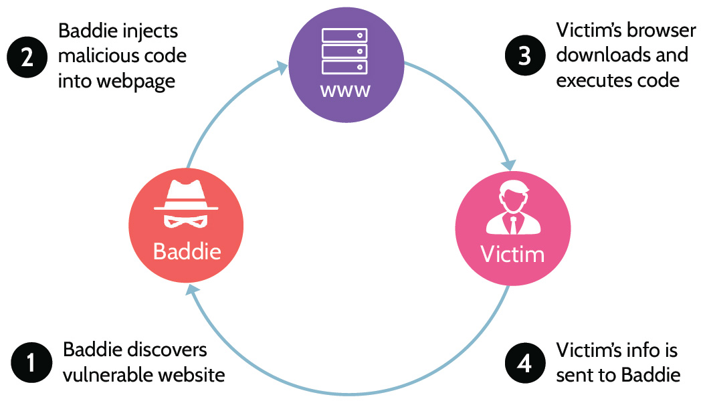
Figure 3-31: Stored/Persistent XSS
Figure 3-31 illustrates what stored XSS looks like. Imagine a user visits a website, like example.com, and sees that a friend has posted a picture of his family. The user comments on the picture, "Wow, what a nice-looking family!" What happens to that comment? It's stored on the website's servers, and anybody with permissions to view that picture can also see the comment. Now, let's imagine that instead of writing a comment, the user writes JavaScript in the comment field. Like a regular comment, the JavaScript is stored on the website's servers, and this time, instead of simply displaying the comment, the web browser of every person who views that picture is going to execute the malicious code that was inserted earlier. When the code executes, something malicious will take place every time that webpage is loaded. This is one form of cross-site scripting (XSS). It requires a vulnerable website that will accept this code. One of the great advantages of this attack is that it literally executes each time a victim visits the vulnerable webpage. The way that this can manifest, as depicted in Figure 3-31, is through the following sequence of steps:
1. Attacker identifies a vulnerable website.
The website must be vulnerable to XSS attacks for this to be successful. The attacker will typically use specific tools to examine underlying code related to pages on the website.
2. Attacker injects malicious code into a page on the website.
Based upon #1, the attacker can inject JavaScript on the website. This could be as simple as typing the code into a comment or a form field, with the result that the JavaScript is stored on the web server.
3. When a victim visits the website, their browser downloads and executes the malicious code.
With the JavaScript injected and stored on the website, every subsequent visitor's browser will access the webpage and execute the malicious code.
4. When the victim's browser executes the JavaScript, information from the victim will be sent to the attacker.
Until the malicious code is cleared from the website, many site visitors could be impacted, and a savvy attacker might be able to gain username/password, banking, or other sensitive information because of the JavaScript executing in the browser.
Attackers might use XSS for any of a number of malicious reasons. For example, the JavaScript code could be used to:
Send a copy of the victim's browser cookies, including session cookies, which could lead to session hijacking and taking over a user's active session to connect to the destination resource.
Disclose files on the victim's computer system.
Install malicious applications.
Reflected/Nonpersistent XSS
Figure 3-32 shows how reflected cross-site scripting works.
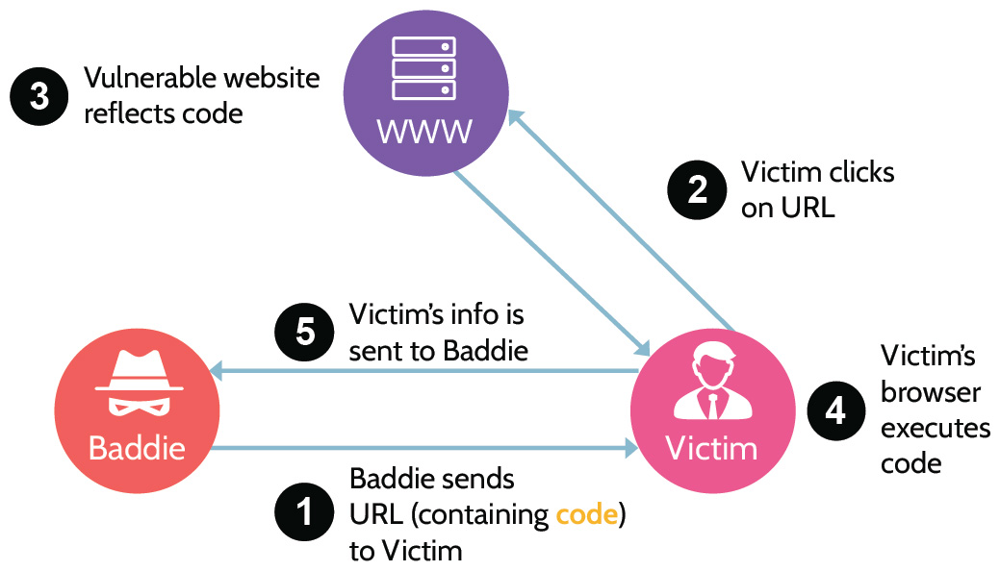
Figure 3-32: Reflected/Nonpersistent XSS
Imagine someone visits example.com, types "cat" in a search window, and selects "submit." The webpage then returns the results of that search query, showing various pictures of cats. Now, let's imagine that an attacker sends a malicious link to the cat lover, and they click on it. This time however, instead of searching for "cat," the URL actually contains a search for a small bit of JavaScript code. So, the cat lover thinks they're searching for "cat," but the URL contains malicious JavaScript code that the web browser is going to execute because of this.
Essentially what is happening in the background is the user is clicking on a URL, which directs them to a website, which then reflects malicious code that was sent to the website back to the victim. This can take place through the following sequence of steps:
1. Attacker sends a malicious URL to a victim.
The URL containing malicious JavaScript code is sent to the victim (commonly via a phishing email).
2. Victim clicks on URL.
Because the URL looks legitimate (or through some other social engineering technique), the user clicks on the malicious link.
3. The vulnerable website reflects malicious code to the victim.
After clicking on the link, the URL that contains the JavaScript code is going to reflect that code back to the victim's browser.
4. The victim's browser executes the reflected code.
Because the malicious code has been reflected back to the victim, their browser is going to execute the JavaScript code.
5. JavaScript code executes (i.e., sensitive data pertaining to the victim is sent to the attacker).
As a result of the JavaScript executing, sensitive data from the victim will be transmitted to the attacker (or any other malicious action the code entails is performed).
It's worth noting that the only person impacted in this scenario is the person who clicked on the malicious URL that was sent by the attacker. The next person to visit example.com and search for something will not receive the same JavaScript code. This is why it's called "reflected," because this attack only "reflects" back to the user who actually clicked on the malicious link. Anyone else who visits the same webpage will not be doing so with the same URL as the victim.
Stored/Persistent and Reflected Cross-Site Scripting Takeaways
From the two examples mentioned above, a few important things should be noted.
In the first example, malicious code is stored on the web server. This type of cross-site scripting is known as stored or persistent because the malicious code is stored on the server, and every user who visits that webpage is going to fall victim to that attack.
In the second example, malicious code is reflected back to the victim via a carefully crafted URL. So, unlike the persistent cross-site scripting attack (which leverages multiple victims) reflected cross-site scripting targets one victim-the person who clicks on the provided crafted URL. Anyone else who visits the normal URL will not be impacted.
Most common type of XSS attacks
Which is the most common type of attack? Reflected is by far the most common and often results when a link in a phishing email is clicked.
Table 3-29 provides a summary of the types of XSS.
|
Persistent or Stored |
|
|
Reflected |
|
|
DOM-based |
|
Table 3-29: Summary of XSS Types
What is the best way to prevent XSS attacks?
Regardless of the XSS type, one of the best ways to prevent them is using server-side input validation. Unlike client-side input validation, which could be easily manipulated by an attacker, server-side validation would remove the possibility of manipulation of the data. In addition, a web application firewall (WAF) would be another great way to prevent XSS attacks.
Cross-Site Request Forgery (CSRF)
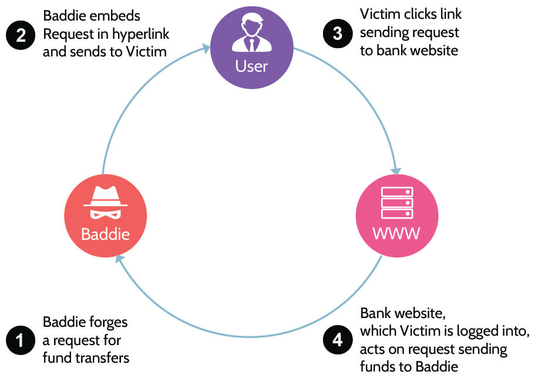
Figure 3-33: CSRF Attack
The success of a cross-site request forgery attack is predicated upon the concept of "persistence" that cookies in browsers facilitate. For example, when a user visits a website frequently, they often tick a box during the login process that says, "Keep me logged in for x number of days." This information is stored in a cookie that is stored in the user's browser. Then, when the user visits the website, e.g., their online banking portal, they're automatically logged in because the cookie sends information to the web server that identifies the user as a legitimate system user. The attack is illustrated in Figure 3-33 and follows the steps below:
1. Attacker forges a request (e.g., a funds transfer request)
The attacker crafts a forged request to make it look legitimate so the victim is fooled into executing it.
2. Attacker embeds forged request in a hyperlink and sends URL to the victim (e.g., via a phishing email).
The forged request could be sent via email, SMS, or another way that appears valid to the victim.
3. Victim clicks link, sending the request to a legitimate entity, like their bank.
Through social engineering or another means, the attacker can entice the victim into clicking on the link.
4. The legitimate entity, which the victim is logged into, acts on the request as requested by the attacker.
Because the victim is already logged into the legitimate entity's online portal (e.g., their bank), the funds transfer request appears valid. As a result, a malicious action can be taken, like transferring funds to the attacker's account, as the bank's web server considers this a legitimate action that is performed by the victim.
With this in mind, the attacker often has a window of time within which to operate, because the CSRF attack does not require the victim to be logged to their bank at the time of the attack. Rather, the persistence of the connection that is facilitated through the cookie can allow the attack to be successful days or even weeks later. By expiring cookies and session tokens more frequently, an attacker's window of opportunity can be considerably reduced.
Who or what are the target of XSS and CSRF attacks?
Another important item to note is that even though the target of the attack appears to be the victim, in fact, the target of the attack is always the server. The victim is merely the vector used by the attacker to exploit the vulnerable server.
XSS versus CSRF
Looking at XSS and CSRF side by side, some key differences exist as highlighted in Table 3-30. With XSS, the target of attack is the user's browser; with CSRF, the target of attack is the web server.
|
XSS |
CSRF |
|
|
|
|
|
|
|
|
|
Table 3-30: XSS vs CSRF
3.5.17 SQL Injection
CORE CONCEPTS |
|
|
|
Understanding SQL Injection should start with an understanding of Structured Query Language (SQL). SQL is a language used for communicating with databases.
Be able to recognize an example of an SQL Injection attack
SQL Injection is a method of attack that utilizes SQL commands and can be used for modification, corruption, insertion, or deletion of data in a database.
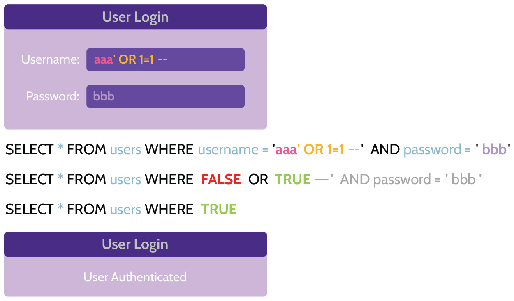
Figure 3-34: SQL injection
Figure 3-34 illustrates what SQL Injection looks like. In this case, imagine a webserver with a database residing behind it. Further imagine that the website associated with this configuration is a dynamic website, meaning that web pages can be created dynamically using data from the database, based upon user requests and interaction with the website.
Due to the dynamic nature of these websites, a persistent connection to the database is required, but a web user should never be able to directly interact with the back-end database. However, SQL Injection makes that possible.
A simple login screen is used so when a person enters their username and password, the database will be queried for the corresponding information, and if it is valid, the user should be authenticated. Using SQL Injection, however, neither a correct nor incorrect username is entered into the "Username" field; rather, a bit of SQL code is entered as shown in Figure 3-34.
The first part of that-aaa-is just text and could be replaced by any other text, same as the entry in the password field. However, everything else following that in the username field (' OR 1=1 --) constitutes the SQL Injection string.
Once this information is entered, the web server will formulate the request into SQL code and send it to the database server, asking if this username and password exist in the database. The first SQL statement below the login box shows how this request will be perceived by the back-end SQL database. Because of the apostrophe (') at the end of aaa, the database server treats aaa as the end of the username and then searches for a username aaa, which probably does not exist. Next, OR 1=1 is treated as a SQL Statement, which when analyzed yields "true." In essence the interpreter executes a logical OR query, which is true if either of the conditions accompanying it are considered true. aaa doesn't exist (resulting in a false state); however, 1 always equals 1, so that returns a true state.
Finally, within SQL, the use of "--" is used to signify that everything that follows it is a comment and would be ignored by the SQL interpreter.
What is the best way to mitigate a SQL injection attack?
So, the result is that based on the above SQL command, the attacker can successfully authenticate and gain access to the system behind the login screen. This example highlights one very important thing: the web server passed unvalidated information directly to the database server.
Unvalidated data should never be passed directly from a web server to a database server. In other words, user input should always be validated, sanitized, or otherwise made to conform to expected formatting standards. Additionally, the use of things like prepared statement/parameterized queries and stored procedures can also help protect against SQL Injection attacks. In short, why would you need a -- or = character to be present in a field storing someone's name? The answer is you wouldn't. So, input validation can help you clear the input from any characters that shouldn't be passed on to the back-end SQL database.
The best way to understand a prepared statement or parameterized query is to think of a template of SQL code, where variables are used and passed to the query later. The separation helps prevent the intent of a query from being changed, regardless of the variable entered through user input or other means.
Stored procedures essentially operate under the same premise as prepared statements, with the biggest difference being that stored procedures are defined and stored in the database itself and then invoked in the application.
SQL Commands
The SQL commands shown in the table below do not need to be memorized. In fact, a listing of all SQL commands would be significantly longer. These are just examples of some of the most common commands for your awareness-so you can recognize what SQL commands look like.
CREATE |
SELECT |
GRANT |
COMMIT |
ALTER |
INSERT |
REVOKE |
ROLLBACK |
DROP |
UPDATE |
|
SAVEPOINT |
TRUNCATE |
DELETE |
|
|
RENAME |
MERGE |
|
|
|
LOCK TABLE |
|
|
SQL Code Examples
Table 3-31 shows you what SQL code looks like-again so you can recognize SQL code. Note that none of these code snippets would be used for SQL injection.
Be able to recognize SQL commands and codes
|
SELECT * FROM users; |
This command would return all of the data stored in the "users" table. |
|
INSERT INTO users (userID, password) VALUES (rob, Pass123); |
This command would insert a new record in the "users" table that contains a userID of "rob" with a corresponding password of "Pass123." |
|
DROP accountsReceivable; |
This command essentially works like "delete" and results in deleting the table named "accountsReceivable" from the database. Let's hope a working copy of the database backup is handy or else it may become very interesting for the database administrator. |
Table 3-31: SQL Code Examples
3.5.18 Input Validation
CORE CONCEPTS |
|
|
|
What is the best way to mitigate web-based vulnerabilities and what types of attacks can be mitigated or prevented
Server-side input validation-checking the contents of input fields-is one of the best ways to prevent XSS and SQL Injection attacks from succeeding. By validating data in an input field on the server side and only allowing data that meets input requirements, SQL code, and commands used in injection attacks can be prevented from running. In addition to standard input validation, which involves clearing input of invalid codes, characters, and commands, another form known as whitelist validation is often used. Allow list (Whitelist) input validation only allows acceptable input that consists of very well-defined characteristics, e.g., numbers, character, or both, size, or length, to name a few formats and standards.
Another approach is deny list (blacklist) input validation where malicious characters can be discarded as they are considered signs of an attack, i.e., if the = or - characters are met in a "First Name" field, they can be safely discarded as a person's first name wouldn't need to include = or -.
What is the risk associated with client-side input validation?
Contrary to server-side input validation, client-side input validation-because it's done on the client side-may be bypassed and effectively rendered useless.
Lack of Input Validation
The more tightly controlled and managed the input, the more secure the application and environment. On the other end of the spectrum, no input validation can lead to serious negative consequences, as numerous web application attacks may be possible.
Reduce Risk of Web-Based Vulnerabilities
To reduce the risk of web-based vulnerabilities, hardening steps, like those mentioned in section 3.5.2, should be followed. Note that these may vary depending on organizational requirements as well as the systems being used.
In its simplest form, the goal of hardening is to reduce the potential attack surface of a system, in other words, to reduce risk. The hardening process could involve one or a combination of the following:
Utilization of a manufacturer's product guide, specifically portions related to security or hardening
Best practice guidance specific to the organization's industry
Information gleaned from online sources
With information gained from sources like those noted above, an organization can make informed decisions and customize hardening steps specifically to their environment and security requirements. At the same time, an organization should document their hardening process and keep it updated for purposes of application to newly deployed systems as well as compliance with existing production systems.